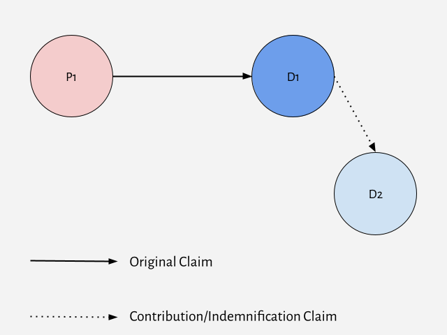

2 Parties & Claims
2.1 Basic Joinder
2.1.1 Permissive Joinder of Claims
Fed. R. Civ. P. Rule 18
(a) In General. A party asserting a claim, counterclaim, crossclaim, or third-party claim may join, as independent or alternative claims, as many claims as it has against an opposing party.
(b) Joinder of Contingent Claims. A party may join two claims even though one of them is contingent on the disposition of the other; but the court may grant relief only in accordance with the parties’ relative substantive rights. In particular, a plaintiff may state a claim for money and a claim to set aside a conveyance that is fraudulent as to that plaintiff, without first obtaining a judgment for the money.
Fed. R. Civ. P. Rule 42
(a) Consolidation. If actions before the court involve a common question of law or fact, the court may:
(1) join for hearing or trial any or all matters at issue in the actions;
(2) consolidate the actions; or
(3) issue any other orders to avoid unnecessary cost or delay.
(b) Separate Trials. For convenience, to avoid prejudice, or to expedite and economize, the court may order a separate trial of one or more separate issues, claims, crossclaims, counterclaims, or third-party claims. When ordering a separate trial, the court must preserve any federal right to a jury trial.
Burdine v. Metropolitan Direct Property and Casualty Ins. Co. (E.D. Ky. 2018)
GREGORY F. VAN TATENHOVE, District Judge
Plaintiff Paulina Brooke Burdine originally filed this lawsuit against defendant Metropolitan Direct Property and Casualty Insurance Company (hereinafter “MetDirect”) in Franklin Circuit Court. MetDirect removed the proceedings to this Court pursuant to 28 U.S.C. §1332. Ms. Burdine asserts two claims against MetDirect stemming from two separate automobile accidents. MetDirect moved to sever these claims or, in the alternative, bifurcate the proceedings. For the following reasons, MetDirect’s Motion to Sever or Bifurcate is DENIED.
I
Ms. Burdine initiated this lawsuit in the wake of two separate automobile accidents. Collision one took place in Scott County, Kentucky when Sandy Strong ran a red light and struck Ms. Burdine’s vehicle. Ms. Strong admitted fault, and her insurance policy paid Ms. Burdine to its limits. Collision two took place in Fayette County, Kentucky when Phillip Smith failed to yield the right of way to Ms. Burdine and struck her vehicle. Again, Mr. Smith admitted fault and his insurance paid Ms. Burdine to its limits. Id. At all relevant times, Ms. Burdine carried Underinsured Motorist Insurance from MetDirect.
On both occasions, the drivers carried only $25,000 in liability insurance. Ms. Burdine alleges that her medical expenses from each accident exceed the $25,000 that she received from the other drivers’ insurance policies. Ms. Burdine now wishes to collect compensation from MetDirect, her own insurance carrier, because her hospital expenses are in excess of what she received from the policies of the other drivers.
II
A
Joinder of claims is governed by Federal Rule of Civil Procedure 18, which states “a party asserting a claim, counterclaim, crossclaim, or third-party claim may join, as independent or alternative clams, as many claims as it has against an opposing party.” The scope of Rule 18(a) is well settled: “The claims which may properly be joined under Rule 18(a) include those which arise out of separate and independent transactions or occurrences, as well as those which arise out of a single transaction or occurrence.”
MetDirect argues that Ms. Burdine’s claims against it are improperly joined in a single action and should be severed. In support of its position, MetDirect cites Federal Rule of Civil Procedure 20(a)(2), which governs the joinder of parties. But this is the wrong rule. “Rule 20 deals solely with joinder of parties and becomes relevant only when there is more than one party on one or both sides of the action. It is not concerned with joinder of claims, which is governed by rule 18.”
MetDirect is correct that Ms. Burdine has asserted two separate claims involving two separate, negligent drivers. In its motion, MetDirect tries to analogize this suit to one against two separate, negligent drivers, and argues that Ms. Burdine will have to prove their negligence to recover at trial. But Ms. Burdine has not sued these drivers in negligence. Rather, she is suing MetDirect in contract, and whatever evidence of the drivers’ negligence Ms. Burdine will have to show at trial, those drivers are not defendants. There is but one defendant in this action—MetDirect—and Ms. Burdine has two claims against that defendant. As such, Ms. Burdine’s claims are properly joined under Rule 18(a). Whether or not Ms. Burdine could have sued the individual drivers for negligence in a single action is irrelevant.
B
While Ms. Burdine’s claims are properly joined against MetDirect under Rule 18, the Court may sever them if inconvenience would result “from trying two matters together which have little or nothing in common.” However, “the joinder of claims is strongly encouraged, and, concomitantly, severance should generally be granted only in ‘exceptional circumstances.’”
Rule 42 governs the bifurcation of civil trials. See Fed. R. Civ. P. 42(b). It states in relevant part, “For convenience, to avoid prejudice, or to expedite and economize, the court may order a separate trial of one or more separate issues, claims, crossclaims, counterclaims, or third-party claims.” “Bifurcation may be appropriate ‘where the evidence offered on two different issues will be wholly distinct.’” The movant has the burden of proving the appropriateness of bifurcation.
MetDirect argues that bifurcation is necessary to avoid confusing the jury. Specifically, MetDirect is concerned that “the commingling of Plaintiff’s claimed damages will .. . render it difficult, if not impossible, for the jury to accurately determine the amount of damages attributable to each incident,” which would prejudice MetDirect. But this is a problem that cannot be avoided even with bifurcation. Ms. Burdine’s collisions occurred approximately ten months apart. Ms. Burdine was still rehabilitating injuries from collision one when she was involved in collision two. At the very least, a jury assessing damages resulting from collision two will be forced to consider collision one to try and distinguish what harm is attributable solely to the second collision.
In fact, the greater risk of prejudice lies with Ms. Burdine should the Court sever these claims. To do so would force Ms. Burdine to participate in two lawsuits, greatly increasing her costs particularly with respect to medical expert testimony to her injuries. Likewise, the Court would be burdened both by the time and expense of separate proceedings in this instance. Further, as counsel for Ms. Burdine aptly puts in the Response to Defendant’s Motion to Sever:
If two trials are held, then at each trial Defendant could attempt to blame plaintiff’s injuries on the other collision. If such tactic were successful, there is the possibility that each jury could decided to attribute all of Plaintiff’s injures to the other collision and award Plaintiff nothing when in fact all of Plaintiff’s injuries are attributable to the two collisions.
Finally, the evidence offered on these two claims would not be “wholly inconsistent” such that bifurcation is necessary. The insurance companies of the other drivers, Ms. Strong and Mr. Smith, have already paid Ms. Burdine to the limit of their policies. The larger issue at trial, then, will not be their negligence, but whether the damages Ms. Burdine suffered exceed the $25,000.00 offered under the other drivers’ respective policies. Therefore, no reason exists to bifurcate these issues at trial.
III
In sum, Ms. Burdine has properly joined her claims, which sound in contract, against single defendant MetDirect. This issue is controlled by Federal Rule of Civil Procedure 18, and Rule 20 has no applicability here. Further, MetDirect will not be prejudiced by trying these claims together. On the contrary, the risk of prejudice to Ms. Burdine is high should her claims be severed, and severance would not convenience, expedite or economize the proceedings. See Fed. R. Civ. P. 42(b).
2.1.2 Permissive Joinder of Parties
Fed. R. Civ. P. Rule 20
(a) Persons Who May Join or Be Joined.
(1) Plaintiffs. Persons may join in one action as plaintiffs if:
(A) they assert any right to relief jointly, severally, or in the alternative with respect to or arising out of the same transaction, occurrence, or series of transactions or occurrences; and
(B) any question of law or fact common to all plaintiffs will arise in the action.
(2) Defendants. Persons—as well as a vessel, cargo, or other property subject to admiralty process in rem—may be joined in one action as defendants if:
(A) any right to relief is asserted against them jointly, severally, or in the alternative with respect to or arising out of the same transaction, occurrence, or series of transactions or occurrences; and
(B) any question of law or fact common to all defendants will arise in the action.
(3) Extent of Relief. Neither a plaintiff nor a defendant need be interested in obtaining or defending against all the relief demanded. The court may grant judgment to one or more plaintiffs according to their rights, and against one or more defendants according to their liabilities.
(b) Protective Measures. The court may issue orders—including an order for separate trials—to protect a party against embarrassment, delay, expense, or other prejudice that arises from including a person against whom the party asserts no claim and who asserts no claim against the party.
Mosley v. General Motors Corp. (E.D. Missouri 1980)
ROSS, Circuit Judge
Nathaniel Mosley and nine other persons joined in bringing this action individually and as class representatives alleging that their rights guaranteed under 42 U.S.C. §2000e et seq. and 42 U.S.C. §1981 were denied by General Motors and Local 25, United Automobile, Aerospace and Agriculture Implement Workers of America Union by reason of their color and race. Each of the ten named plaintiffs had, prior to the filing of the complaint, filed a charge with the Equal Employment Opportunity Commission EEOC asserting the facts underlying these claims. Pursuant thereto, the EEOC made a reasonable cause finding that General Motors, Fisher Body Division and Chevrolet Division, and the Union had engaged in unlawful employment practices in violation of Title VII of the Civil Rights Act of 1964. Accordingly, the charging parties were notified by EEOC of their right to institute a civil action in the appropriate federal district court, pursuant to §706(e) of Title VII, 42 U.S.C. §2000e-5(e).
In each of the first eight counts of the twelve-count complaint, eight of the ten plaintiffs alleged that General Motors, Chevrolet Division, had engaged in unlawful employment practices by: “discriminating against Negroes as regards promotions, terms and conditions of employment”; “retaliating against Negro employees who protested actions made unlawful by Title VII of the Act and by discharging some because they protested said unlawful acts”; “failing to hire Negro employees as a class on the basis of race”; “failing to hire females as a class on the basis of sex”; “discharging Negro employees on the basis of race”; and “discriminating against Negroes and females in the granting of relief time.” Each additionally charged that the defendant Union had engaged in unlawful employment practices “with respect to the granting of relief time to Negro and female employees” and “by failing to pursue 6a grievances.” The remaining two plaintiffs made similar allegations against General Motors, Fisher Body Division. All of the individual plaintiffs requested injunctive relief, back pay, attorneys fees and costs.
The district court ordered that “insofar as the first ten counts are concerned, those ten counts shall be severed into ten separate causes of action,” and each plaintiff was directed to bring a separate action based upon his complaint, duly and separately filed.
In reaching this conclusion on joinder, the district court followed the reasoning of Smith v. North American Rockwell Corp., 50 F.R.D. 515 (N.D.Okla.1970), which, in a somewhat analogous situation, found there was no right to relief arising out of the same transaction, occurrence or series of transactions or occurrences, and that there was no question of law or fact common to all plaintiffs sufficient to sustain joinder under Federal Rule of Civil Procedure 20(a). Similarly, the district court here felt that the plaintiffs’ joint actions against General Motors and the Union presented a variety of issues having little relationship to one another; that they had only one common problem, i. e. the defendant; and that as pleaded the joint actions were completely unmanageable. Upon entering the order, and upon application of the plaintiffs, the district court found that its decision involved a controlling question of law as to which there is a substantial ground for difference of opinion and that any of the parties might make application for appeal under 28 U.S.C. §1292(b). We granted the application to permit this interlocutory appeal and for the following reasons we affirm in part and reverse in part.
Rule 20(a) of the Federal Rules of Civil Procedure provides:
All persons may join in one action as plaintiffs if they assert any right to relief jointly, severally, or in the alternative in respect of or arising out of the same transaction, occurrence, or series of transactions or occurrences and if any question of law or fact common to all these persons will arise in the action.
Additionally, Rule 20(b) and Rule 42(b) vest in the district court the discretion to order separate trials or make such other orders as will prevent delay or prejudice. In this manner, the scope of the civil action is made a matter for the discretion of the district court, and a determination on the question of joinder of parties will be reversed on appeal only upon a showing of abuse of that discretion. To determine whether the district court’s order was proper herein, we must look to the policy and law that have developed around the operation of Rule 20.
The purpose of the rule is to promote trial convenience and expedite the final determination of disputes, thereby preventing multiple lawsuits. Single trials generally tend to lessen the delay, expense and inconvenience to all concerned. Reflecting this policy, the Supreme Court has said:
Under the Rules, the impulse is toward entertaining the broadest possible scope of action consistent with fairness to the parties; joinder of claims, parties and remedies is strongly encouraged.
United Mine Workers of America v. Gibbs, 383 U.S. 715 (1966).
Permissive joinder is not, however, applicable in all cases. The rule imposes two specific requisites to the joinder of parties: (1) a right to relief must be asserted by, or against, each plaintiff or defendant relating to or arising out of the same transaction or occurrence, or series of transactions or occurrences; and (2) some question of law or fact common to all the parties must arise in the action.
In ascertaining whether a particular factual situation constitutes a single transaction or occurrence for purposes of Rule 20, a case by case approach is generally pursued. No hard and fast rules have been established under the rule. However, construction of the terms “transaction or occurrence” as used in the context of Rule 13(a) counterclaims offers some guide to the application of this test. For the purposes of the latter rule,
“Transaction” is a word of flexible meaning. It may comprehend a series of many occurrences, depending not so much upon the immediateness of their connection as upon their logical relationship.
Moore v. New York Cotton Exchange, 270 U.S. 593 (1926). Accordingly, all “logically related” events entitling a person to institute a legal action against another generally are regarded as comprising a transaction or occurrence. The analogous interpretation of the terms as used in Rule 20 would permit all reasonably related claims for relief by or against different parties to be tried in a single proceeding. Absolute identity of all events is unnecessary.
This construction accords with the result reached in United States v. Mississippi, 380 U.S. 128 (1965), a suit brought by the United States against the State of Mississippi, the election commissioners, and six voting registrars of the State, charging them with engaging in acts and practices hampering and destroying the right of black citizens of Mississippi to vote. The district court concluded that the complaint improperly attempted to hold the six county registrars jointly liable for what amounted to nothing more than individual torts committed by them separately against separate applicants. In reversing, the Supreme Court said:
But the complaint charged that the registrars had acted and were continuing to act as part of a state-wide system designed to enforce the registration laws in a way that would inevitably deprive colored people of the right to vote solely because of their color. On such an allegation the joinder of all the registrars as defendants in a single suit is authorized by Rule 20(a) of the Federal Rules of Civil Procedure. These registrars were alleged to be carrying on activities which were part of a series of transactions or occurrences the validity of which depended to a large extent upon “questions of law or fact common to all of them.”
Here too, then, the plaintiffs have asserted a right to relief arising out of the same transactions or occurrences. Each of the ten plaintiffs alleged that he had been injured by the same general policy of discrimination on the part of General Motors and the Union. Since a “state-wide system designed to enforce the registration laws in a way that would inevitably deprive colored people of the right to vote” was determined to arise out of the same series of transactions or occurrences, we conclude that a company-wide policy purportedly designed to discriminate against blacks in employment similarly arises out of the same series of transactions or occurrences. Thus the plaintiffs meet the first requisite for joinder under Rule 20(a).
The second requisite necessary to sustain a permissive joinder under the rule is that a question of law or fact common to all the parties will arise in the action. The rule does not require that all questions of law and fact raised by the dispute be common. Yet, neither does it establish any qualitative or quantitative test of commonality. For this reason, cases construing the parallel requirement under Federal Rule of Civil Procedure 23(a) provide a helpful framework for construction of the commonality required by Rule 20. In general, those cases that have focused on Rule 23(a)(2) have given it a permissive application so that common questions have been found to exist in a wide range of context. Specifically, with respect to employment discrimination cases under Title VII, courts have found that the discriminatory character of a defendant’s conduct is basic to the class, and the fact that the individual class members may have suffered different effects from the alleged discrimination is immaterial for the purposes of the prerequisite. In this vein, one court has said:
Although the actual effects of a discriminatory policy may thus vary throughout the class, the existence of the discriminatory policy threatens the entire class. And whether the Damoclean threat of a racially discriminatory policy hangs over the racial class is a question of fact common to all the members of the class.
The right to relief here depends on the ability to demonstrate that each of the plaintiffs was wronged by racially discriminatory policies on the part of the defendants General Motors and the Union. The discriminatory character of the defendants’ conduct is thus basic to each plaintiff’s recovery. The fact that each plaintiff may have suffered different effects from the alleged discrimination is immaterial for the purposes of determining the common question of law or fact. Thus, we conclude that the second requisite for joinder under Rule 20(a) is also met by the complaint.
For the reasons set forth above, we conclude that the district court abused its discretion in severing the joined actions. The difficulties in ultimately adjudicating damages to the various plaintiffs are not so overwhelming as to require such severance. If appropriate, separate trials may be granted as to any particular issue after the determination of common questions.
The judgment of the district court disallowing joinder of the plaintiffs’ individual actions is reversed and remanded with directions to permit the plaintiffs to proceed jointly.
2.1.3 Counterclaims
Fed. R. Civ. P. Rule 13(a), (b), & (h)
(a) Compulsory Counterclaim.
(1) In General. A pleading must state as a counterclaim any claim that—at the time of its service—the pleader has against an opposing party if the claim:
(A) arises out of the transaction or occurrence that is the subject matter of the opposing party’s claim; and
(B) does not require adding another party over whom the court cannot acquire jurisdiction.
(2) Exceptions. The pleader need not state the claim if:
(A) when the action was commenced, the claim was the subject of another pending action; or
(B) the opposing party sued on its claim by attachment or other process that did not establish personal jurisdiction over the pleader on that claim, and the pleader does not assert any counterclaim under this rule.
(b) Permissive Counterclaim. A pleading may state as a counterclaim against an opposing party any claim that is not compulsory.
(h) Joining Additional Parties. Rules 19 and 20 govern the addition of a person as a party to a counterclaim or crossclaim.
Jones v. Ford Motor Credit, 358 F.3d 205 (2d Cir. 2004)
NEWMAN, Circuit Judge
This appeal concerns the availability of subject matter jurisdiction for permissive counterclaims. It also demonstrates the normal utility of early decision of a motion for class certification. Defendant-Appellant Ford Motor Credit Company (“Ford Credit”) appeals from the June 14, 2002, judgment of the United States District Court for the Southern District of New York (Lawrence M. McKenna, District Judge) dismissing for lack of jurisdiction its permissive counterclaims against three of the four Plaintiffs-Appellees and its conditional counterclaims against members of the putative class that the Plaintiffs-Appellees seek to certify. We conclude that supplemental jurisdiction authorized by 28 U.S.C. §1367 may be available for the permissive counterclaims, but that the District Court’s discretion under subsection 1367(c) should not be exercised in this case until a ruling on the Plaintiffs’ motion for class certification. We therefore vacate and remand.
Background
Plaintiffs-Appellees Joyce Jones, Martha L. Edwards, Lou Cooper, and Vincent E. Jackson (“Plaintiffs”), individually and as class representatives, sued Ford Credit alleging racial discrimination under the Equal Credit Opportunity Act (“ECOA”), 15 U.S.C. §1691 et seq. (2003). They had purchased Ford vehicles under Ford Credit’s financing plan. They alleged that the financing plan discriminated against African-Americans. Although the financing rate was primarily based on objective criteria, Ford Credit permitted its dealers to mark up the rate, using subjective criteria to assess non-risk charges. The Plaintiffs alleged that the mark-up policy penalized African-American customers with higher rates than those imposed on similarly situated Caucasian customers.
In its Answer, Ford Credit denied the charges of racial discrimination and also asserted state-law counterclaims against Jones, Edwards, and Cooper for the amounts of their unpaid car loans. Ford Credit alleged that Jones was in default on her obligations under her contract for the purchase of a 1995 Ford Windstar, and that Edwards and Cooper were in default on payments for their joint purchase of a 1995 Mercury Cougar. Additionally, in the event that a class was certified, Ford Credit asserted conditional counterclaims against any member of that class who was in default on a car loan from Ford Credit. The Plaintiffs moved to dismiss Ford Credit’s counterclaims for lack of subject matter jurisdiction, Fed.R.Civ.P. 12(b)(1), lack of personal jurisdiction, Fed.R.Civ.P. 12(b)(2), improper venue, Fed.R.Civ.P. 12(b)(3), and failure to state a claim upon which relief could be granted, Fed.R.Civ.P. 12(b)(6).
The District Court granted the Plaintiffs’ motion and dismissed Ford Credit’s counterclaims, summarizing its reasons for doing so as follows: “Defendant’s counterclaims do not meet the standard for compulsory counterclaims[, and] pursuant to §1367(c)(4), there are compelling reasons to decline to exercise jurisdiction over the counterclaims.”
In reaching these conclusions, Judge McKenna acknowledged some uncertainty. After determining that the counterclaims were permissive, he expressed doubt as to the jurisdictional consequence of that determination. On the one hand, he believed, as the Plaintiffs maintain, that permissive counterclaims must be dismissed if they lack an independent basis of federal jurisdiction. On the other hand, he acknowledged that “there was some authority to suggest that the court should determine, based on the particular circumstances of the case, whether it had authority to exercise supplemental jurisdiction under §1367(a)” over a counterclaim, regardless of whether it was compulsory or permissive.
To resolve his uncertainty, Judge McKenna initially ruled that the counterclaims, being permissive, “must be dismissed for lack of an independent basis of federal jurisdiction.” He then ruled that, if he was wrong and if supplemental jurisdiction under section 1367 was available, he would still dismiss the counterclaims in the exercise of the discretion subsection 1367(c) gives district courts.
On March 27, 2003, the District Court entered judgment pursuant to Fed.R.Civ.P. 54(b) in favor of the Plaintiffs, dismissing Ford Credit’s counterclaims without prejudice. Ford Credit appeals from this decision.
Discussion
I. Are Ford Credit’s Counterclaims Permissive?
Fed.R.Civ.P. 13(a) defines a compulsory counterclaim as
any claim which at the time of serving the pleading the pleader has against any opposing party, if it arises out of the transaction or occurrence that is the subject matter of the opposing party’s claim and does not require for its adjudication the presence of third parties of whom the court cannot obtain jurisdiction.
Such counterclaims are compulsory in the sense that if they are not raised, they are forfeited. Fed.R.Civ.P. 13(b) defines a permissive counterclaim as “any claim against an opposing party not arising out of the transaction or occurrence that is the subject matter of the opposing party’s claim.”
Whether a counterclaim is compulsory or permissive turns on whether the counterclaim “arises out of the transaction or occurrence that is the subject matter of the opposing party’s claim,” and this Circuit has long considered this standard met when there is a “logical relationship” between the counterclaim and the main claim.
Although the “logical relationship” test does not require “an absolute identity of factual backgrounds,” the “‘essential facts of the claims [must be] so logically connected that considerations of judicial economy and fairness dictate that all the issues be resolved in one lawsuit.’”
We agree with the District Court that the debt collection counterclaims were permissive rather than compulsory. The Plaintiffs’ ECOA claim centers on Ford Credit’s mark-up policy, based on subjective factors, which allegedly resulted in higher finance charges on their purchase contracts than on those of similarly situated White customers. Ford Credit’s debt collection counterclaims are related to those purchase contracts, but not to any particular clause or rate. Rather, the debt collection counterclaims concern the individual Plaintiffs’ non-payment after the contract price was set. Thus, the relationship between the counterclaims and the ECOA claim is “logical” only in the sense that the sale, allegedly on discriminatory credit terms, was the “but for” cause of the non-payment. That is not the sort of relationship contemplated by our case law on compulsory counterclaims. The essential facts for proving the counterclaims and the ECOA claim are not so closely related that resolving both sets of issues in one lawsuit would yield judicial efficiency. Indeed, Ford Credit does not even challenge the ruling that its counterclaims are permissive.
Ginwright v. Exeter Finance, No. TDC-16-0565 (D. Md. 2016)
CHUANG, District Judge
On February 26, 2016, Plaintiff Billy Ginwright filed this action against Defendant Exeter Finance Corporation (“Exeter”) for violations of the Telephone Consumer Protection Act (“TCPA”), 47 U.S.C. §227 (2012), and the Maryland Telephone Consumer Protection Act (“MTCPA”), Md. Code Ann., Com. Law §§14-3201 to -3202 (West 2013). On May 11, 2016, Exeter filed its Amended Answer and Counterclaim, alleging that Ginwright breached the contract that led Exeter to seek to collect a debt by telephone. Pending before the Court is Ginwright’s Motion to Dismiss Exeter’s Counterclaim. For the following reasons, the Motion is granted.
Background
In May 2013, Ginwright entered into a contract with BW Auto Outlet of Hanover, Maryland to finance the purchase of a vehicle. Within the contract, BW Auto Outlet assigned all of its rights under the contract to Exeter. In his Complaint, Ginwright alleges that in seeking to collect a debt under the contract, Exeter called Ginwright’s cellular phone “hundreds of times” by means of an automatic dialing system. Compl. ¶¶ 22-23. Ginwright maintains that Exeter made the calls for non-emergency purposes and without his prior express consent. He also asserts that he repeatedly told Exeter to cease calling him, to no avail. Rather, Exeter representatives told him that they would not stop calling his cellular phone, and that the calls would continue through the automatic dialing system. As a result, with rare exceptions, Ginwright received three to seven calls from Exeter every day between December 4 and December 17, 2014; March 5 and April 29, 2015; and May 10 and June 5, 2015.
In its Counterclaim, Exeter alleges that Ginwright breached the original contract when he failed to make car payments, requiring Exeter to repossess the vehicle. Exeter contends that, following the sale of the vehicle and the application of the sale proceeds to the full amount owed, Ginwright owed a remainder of $23,782.17 under the contract as of May 3, 2016.
Discussion
Ginwright is seeking dismissal of the counterclaim pursuant to Federal Rule of Civil Procedure 12(b)(1) for lack of subject matter jurisdiction. Ginwright asserts that Exeter has failed to assert any independent basis for jurisdiction over the counterclaim and that this Court may not exercise supplemental jurisdiction over the counterclaim because it is a permissive counterclaim. Exeter counters that, since the enactment of 28 U.S.C. §1367, a court, may exercise supplemental jurisdiction over a permissive counterclaim, and that, in any event, its counterclaim is compulsory.
III. Permissive Counterclaim
In assessing whether a counterclaim is compulsory or permissive, courts consider four inquiries:
(1) Are the issues of fact and law raised in the claim and counterclaim largely the same?
(2) Would res judicata bar a subsequent suit on the party’s counterclaim, absent, the compulsory counterclaim rule?
(3) Will substantially the same evidence support or refute the claim as well as the counterclaim? and
(4) Is there any logical relationship between the claim and counterclaim?
These inquiries are more akin to a set of guidelines than a rigid test, such that a “court need not answer all these questions in the affirmative for the counterclaim to be compulsory.”
Applying the four inquiries here, the Court concludes that Exeter’s counterclaim is permissive. First, the issues of fact and law raised in the TCPA claim and breach of contract counterclaim are largely dissimilar. The TCPA bars “any call (other than a call made for emergency purposes or made with the prior express consent of the called party) using any automatic telephone dialing system or an artificial or prerecorded voice” to any telephone number assigned to a cellular telephone service. 47 U.S.C. §227(b)(1)(A)(iii). Thus, to prevail on this claim, Ginwright must establish that Exeter made calls to the plaintiffs cellular phone, by means of an automatic dialing system, without Ginwright’s express consent or an emergency purpose. There is no requirement to show any underlying contractual dispute or debt that led to such phone calls. Meanwhile, the breach of contract counterclaim requires proof of an agreement between the parties and a failure by Ginwright to honor the terms of that agreement to make timely car payments. According to Ginwright, his defense may be based on the assertion that Exeter did not comply with the statutorily required repossession and resale procedures contained in the Creditor Grantor Closed End Credit (“CLEC”) provisions of the Maryland Commercial Law Article, which must be satisfied in order for a lender to collect a deficiency judgment for an unpaid car loan. There is no requirement to show any use or lack of use of telephone calls to the borrower. Thus, there is little overlap between the two sets of legal and factual issues.
Second, because the legal and factual issues are different, the evidence would not be “substantially the same.” While the alleged contract underlying the counterclaim might be admissible on the TCPA claim to the extent that it is relevant to establishing prior express consent for phone calls or the lack thereof, the evidence on the TCPA claim will primarily consist of records and testimony about the number of calls received and the use of the automatic dialing system, which would be of no relevance to the breach of contract counterclaim. Likewise, Exeter’s counterclaim, which contains no allegations relating to phone calls or an automatic dialing system, will rely primarily on evidence that does not pertain to the TCPA claim, such as proof of Ginwright’s failure to make car payments and evidence that Exeter did or did not repossess the car and resell it in accordance with Maryland’s CLEC requirements.
Third, res judicata would not bar a subsequent suit on the breach of contract counterclaim. “The preclusive effect of a federal-court judgment is determined by federal common law.” An action is precluded when:
1) the prior judgment was final and on the merits, and rendered by a court of competent jurisdiction in accordance with the requirements of due process; 2) the parties are identical, or in privity, in the two actions; and, 3) the claim in the second matter is based upon the same cause of action involved in the earlier proceeding.
Claims “based upon the same cause of action” are those which “arise out of the same transaction or series of transactions, or the same core of operative facts.” As discussed above, Exeter’s counterclaim, which is associated with the sales agreement for a vehicle, derives from a different core set of facts than Ginwright’s TCPA claim, which is based on numerous phone calls placed to his cellular phone from December 2014 to July 2015. Thus, res judicata would not bar a subsequent breach of contract claim by Exeter.
Fourth, any logical relationship between the TCPA claim and the breach of contract counterclaim is a loose one. Although the TCPA claim would likely not have arisen in the absence of the original contract at issue on the counterclaim, there is little or no connection between a claim concerning the misuse of an automatic dialing system and a counterclaim alleging the failure to pay back a loan.
Considering all of the factors, the Court concludes that Exeter’s counterclaim is permissive. Although the Fourth Circuit has not addressed this precise issue, it has held that where a plaintiff alleged a violation of the disclosure requirements of the Truth-in-Lending Act (“TILA”), 15 U.S.C. §§1601-1667(f) (2012), a counterclaim seeking payment of the undeflying debt was permissive. In Whigham, the court concluded that the counterclaim raised “significantly different” issues of law and fact than those presented by the TILA claim and that evidence on the two claims differed because only the counterclaim depended on verification of the debt and proof of default. It also concluded that the claims were “not logically related” because although the federal claim involved the same loan, it did not “arise from the obligations created by the contractual transaction.” These same conclusions apply here, where Ginwright’s TCPA claim involves different issues of fact and law, relies on different evidence, and is no more logically related to the counterclaim than the TILA claim in Whigham was to its counterclaim.
The Court’s conclusion is consistent with those of several district courts that have held that, in the case of a TCPA claim, a counterclaim alleging a failure to pay the debt that was the subject of the telephone calls was permissive.
Exeter’s citation to a single district court case reaching the contrary conclusion, Horton v. Calvary Portfolio Servs., (S.D. Cal. 2014), is unpersuasive. In Horton, the court applied the “logical relationship” test, followed by the United States Court of Appeals for the Ninth Circuit in determining whether a counterclaim is compulsory or permissive, which differs from the Fourth Circuit’s four-part inquiry. Moreover, other courts applying a logical relationship test have concluded that a breach of contract counterclaim to a TCPA claim is permissive.
Pace v. Timmermann’s Ranch, 795 F.3d 748 (7th Cir. 2015)
RIPPLE, Circuit Judge
In 2011, Timmermann’s Ranch and Saddle Shop (“Timmermann’s”) brought an action against its former employee, Jeanne Pace, for conversion, breach of fiduciary duty, fraud, and unjust enrichment. It alleged that Ms. Pace had stolen merchandise and money from the company. Ms. Pace filed her answer and a counterclaim in early 2011.
In 2013, Ms. Pace and Dan Pace, her husband, filed a separate action against Timmermann’s and four of its employees, Dale Timmermann, Carol Timmermann, Dawn Manley, and Tammy Rigsby (collectively “the individual defendants”). They alleged that these defendants had conspired to facilitate Ms. Pace’s false arrest. Ms. Pace alleged that, as a result of their actions, she had suffered severe and extreme emotional distress. Mr. Pace claimed a loss of consortium.
Ms. Pace filed a motion to consolidate these two actions. The court granted the motion with respect to discovery, but denied the motion with respect to trial and instructed Ms. Pace that she should request consolidation for trial after the close of discovery. In the midst of discovery, however, the district court dismissed Ms. Pace’s 2013 action after concluding that her claims were actually compulsory counterclaims that should have been filed with her answer to the company’s 2011 complaint. Ms. Pace appeals the dismissal of her 2013 action and the court’s denial of her motion to consolidate.
We hold that Ms. Pace’s claims against parties other than Timmermann’s were not compulsory counterclaims because Federal Rules of Civil Procedure 13 and 20, in combination, do not compel a litigant to join additional parties to bring what would otherwise be a compulsory counterclaim. We also hold that because Ms. Pace’s claim for abuse of process against Timmermann’s arose prior to the filing of her counterclaim, it was a mandatory counterclaim. We therefore affirm in part and reverse in part the judgment of the district court and remand the case for further proceedings.
I. Background
A.
The issues in this case present a somewhat complex procedural situation. For ease of reading, we first will set forth the substantive allegations of each party. Then, we will set forth the procedural history of this litigation in the district court.
1.
Timmermann’s boards, buys, and sells horses, as well as operates both a ranch and a “saddle shop,” in which it sells merchandise for owners and riders of horses. When this dispute arose, Carol and Dale Timmermann managed Timmermann’s. Dawn Manley and Tammy Rigsby were employees of Timmermann’s.
In its 2011 complaint, Timmermann’s alleged that, while employed as a bookkeeper at Timmermann’s, Ms. Pace had embezzled funds and stolen merchandise. According to the complaint, beginning at an unknown time, Ms. Pace regularly began removing merchandise from Timmermann’s without paying; she would then sell those articles on eBay for her personal benefit. Timmermann’s further alleged that it discovered that Ms. Pace was selling items on eBay through a private sting operation.
According to the complaint, in February 2011, a Timmermann’s employee discovered some of the company’s merchandise in Ms. Pace’s car. At this point, Timmermann’s fired Ms. Pace. Thereafter, during a review of its records, including the checking account maintained by Ms. Pace, Timmermann’s discovered that a check that Ms. Pace had represented as being payable to a hay vendor actually had been made payable to cash. Timmermann’s also discovered that, on at least eight occasions, Ms. Pace had utilized the company’s business credit card to make personal purchases.
2.
In her 2013 complaint, Ms. Pace alleged that her conduct while working at Timmermann’s was consistent with its usual course of business. She stated that Timmermann’s had a practice of allowing employees to use cash to purchase merchandise at cost or, alternatively, by deducting the merchandise’s value from the employee’s pay. She maintains that she had purchased the company’s merchandise under that established practice. She also alleged that Carol Timmermann, her supervisor, knew that she had sold the company’s merchandise at flea markets and never had objected.
Ms. Pace also maintained that she was instructed to write corporate checks out to cash and to note the payee in the check records. Pursuant to those instructions, Ms. Pace had written checks to cash and recorded the payee and purpose of the check in the check records. Ms. Pace further alleged that Carol Timmermann had instructed her to use Carol’s credit card, which was used as the corporate credit card, for personal purchases and to reimburse Carol, and not Timmermann’s, for those purchases.
According to Ms. Pace’s complaint, on February 14, 2011, Dale Timmermann called the Lake County, Illinois, Sheriff’s Office and accused Ms. Pace of stealing over $100,000 in merchandise from Timmermann’s. On February 14 and 15, Dale Timmermann took affirmative steps to convince the Sheriff’s Office to arrest Ms. Pace by stating that Ms. Pace had stolen approximately $100,000 in merchandise and that Ms. Pace had been changing inventory on the computer. Ms. Pace was taken into custody by the Lake County Sheriff’s Office on February 15, 2011, and released on February 16.
Following her release from custody, the individual defendants continued to provide the Sherriff’s Office with information about Ms. Pace’s allegedly unlawful conduct. On March 13, 2012, the State’s Attorney brought charges against Ms. Pace premised on the information provided by the company’s employees. Ms. Pace was charged with theft, forgery, and unlawful use of a credit card.
B.
We turn now to the procedural history of this litigation in the district court, a history that produced the situation before us today.
On March 3, 2011, Timmermann’s filed its civil complaint against Ms. Pace, alleging conversion, breach of fiduciary duty, fraud, and unjust enrichment. It sought to recover the value of the merchandise and money that Ms. Pace allegedly had stolen. Ms. Pace filed her answer and counterclaims on April 5, 2011.
On February 1, 2013, Ms. Pace and Mr. Pace (collectively “the Paces”) filed a complaint against Timmermann’s and the individual defendants, alleging that they had conspired to facilitate Ms. Pace’s false arrest. Ms. Pace alleged that she had suffered severe and extreme emotional distress; Mr. Pace claimed a loss of consortium. Specifically, the Paces’ complaint included seven counts: “false arrest/false imprisonment/in concert liability” (Count I); “abuse of process” (Count II); “intentional infliction of emotional distress” (Count III); “conspiracy to commit abuse of process and intentional infliction of emotional distress” (Count IV); “in concert activity” (Count V); “aiding and abetting abuse of process and intentional infliction of emotional distress” (Count VI); and “loss of consortium” (Count VII). Only four counts, Counts I-III and Count VII, listed Timmermann’s as a defendant. The remaining counts were directed at Dale and Carol Timmermann or the other individual defendants.
On March 15, 2013, Ms. Pace filed a motion to consolidate the two cases. On April 2, 2013, the district court consolidated the cases for the purpose of discovery and pretrial practice. The court denied without prejudice the motion to consolidate the cases for trial; it stated that it would rule on a motion to consolidate for trial after discovery.
On May 2, 2013, Timmermann’s and the individual defendants moved to dismiss Ms. Pace’s action under Federal Rules of Civil Procedure 12(b)(6) and 13(a). They contended that her allegations should have been filed as compulsory counterclaims in the 2011 action. Thereafter, Ms. Pace moved to amend her 2011 counterclaim and to consolidate the cases for trial. The district court set a briefing schedule for the company’s motion to dismiss and held Ms. Pace’s motion to consolidate in abeyance.
In December 2013, the district court granted the company’s motion to dismiss. The court concluded that Ms. Pace’s separate claims were barred because they were compulsory counterclaims that should have been brought in the 2011 action because the claims arose out of the same transaction or occurrence. Noting that her 2013 complaint had indicated that the fear of being indicted caused her emotional distress, the court held that Ms. Pace’s claims were in existence when the 2011 action was filed; it therefore rejected Ms. Pace’s argument that her abuse-of-process claim was not in existence until she was charged. In the district court’s view, the absence of Mr. Pace and the individual defendants from the 2011 action did not preclude the court’s conclusion that Ms. Pace’s claims were compulsory counterclaims because Mr. Pace and the individual defendants could have been joined in the 2011 action under Federal Rule of Civil Procedure 20.
II. Discussion
The Paces now appeal the dismissal of the 2013 action. They concede that Ms. Pace’s false arrest and emotional distress claims against Timmermann’s were compulsory counterclaims and therefore properly dismissed. They contend, however, that Ms. Pace’s claims against the individual defendants and Mr. Pace’s claims for loss of consortium were not compulsory counterclaims. They also submit that Ms. Pace’s abuse of process claim against Timmermann’s did not “exist” when the 2011 action was filed and therefore could not have been a compulsory counterclaim.
A.
Federal Rule of Civil Procedure 13 governs compulsory counterclaims. Rule 13(a)(1) provides:
In General. A pleading must state as a counterclaim any claim that—at the time of its service—the pleader has against an opposing party if the claim:
(A) arises out of the transaction or occurrence that is the subject matter of the opposing party’s claim; and
(B) does not require adding another party over whom the court cannot acquire jurisdiction.
The text of this subsection limits the definition of compulsory counterclaim to those claims that the pleader has against an opposing party; it does not provide for the joinder of parties. Instead, in a later subsection, it expressly incorporates the standards set out for the required joinder of parties under Rule 19 and the permissive joinder of parties under Rule 20. Specifically, subsection 13(h) provides: “Rules 19 and 20 govern the addition of a person as a party to a counterclaim or crossclaim.”
Rule 19 requires that a party be joined if, “in that person’s absence, the court cannot accord complete relief among existing parties,” or if proceeding in the party’s absence may “impair or impede the person’s ability to protect his interest” or “leave an existing party subject to a substantial risk of incurring double, multiple, or otherwise inconsistent obligations.” Fed.R.Civ.P. 19(a)(1). In contrast, Rule 20 allows for parties to be joined if “any right to relief is asserted against them jointly, severally, or in the alternative with respect to or arising out of the same transaction, occurrence, or series of transactions or occurrences; and any question of law or fact common to all defendants will arise in the action.” Fed.R.Civ.P. 20(a)(2).
The district court did not hold, and Timmermann’s does not contend, that the individual defendants named in Ms. Pace’s complaint were opposing parties under Rule 13(a) in the 2011 action. Nor does the company’s claim that the individual defendants were required parties under Rule 19. Instead, Timmermann’s submits that, because the district court could have acquired jurisdiction over the individual defendants and could have joined them under Rule 20, it was appropriate to treat Ms. Pace’s claims as compulsory counterclaims. In essence, Timmermann’s combines the permissive joinder rule under Rule 20 with the compulsory counterclaim requirement in Rule 13 to create a rule for compulsory joinder.
The text of the rules, however, do not permit such an arrangement. Timmermann’s relies on the text of Rule 13(a)(1)(B), which provides that a claim is not a compulsory counterclaim if it “requires adding another party over whom the court cannot acquire jurisdiction.” From this statement, Timmermann’s devises that, because the district court could have exercised jurisdiction over the individual defendants, the claims against them must be brought as compulsory counterclaims. Rule 13, however, does not require the joinder of parties. Its scope is limited to the filing of counterclaims. Although Rule 13(a)(1)(B), like Rule 19, encourages that all claims be resolved in one action with all the interested parties before the court, Rule 13 fulfills this objective by allowing, not mandating, that a defendant bring counterclaims that require additional parties. Whether a party must be joined in an action continues to be governed only by Rule 19. Rule 13(a)(1)(B) does not transform Rule 20 into a mandatory joinder rule.
Requiring Ms. Pace to bring the claims against the individual defendants as a counterclaim in the initial action might well serve judicial economy, but the Federal Rules of Civil Procedure do not require such a result. The Rules strike a delicate balance between (1) a plaintiff’s interest in structuring litigation, (2) a defendant’s “wish to avoid multiple litigation, or inconsistent relief,” (3) an outsider’s interest in joining the litigation, and (4) “the interest of the courts and the public in complete, consistent, and efficient settlement of controversies.” The rules generally allow for a plaintiff to decide who to join in an action. A plaintiff’s interest in structuring litigation is overridden only when the prejudice to the defendant or an absent party is substantial and cannot be avoided. Otherwise, the threat of duplicative litigation generally is insufficient to override a plaintiff’s interest in this regard.
Indeed, if Ms. Pace had brought her claim before Timmermann’s filed suit, she could have chosen to file separate actions against Timmermann’s and the individual defendants. It makes little sense to require Ms. Pace to join the individual defendants under Rule 20 in order to bring all of her claims in the same action when, if she initially had been the plaintiff, she would not have been required to join those same parties.
Timmermann’s recognizes that Rule 20 does not require a litigant to join additional parties. Therefore, because a party is not required to join additional parties under Rules 13 or 20, the district court erred by barring Ms. Pace’s claims against the individual defendants and Mr. Pace’s claims for failing to join them when she brought her counterclaim.
B.
We turn now to whether the district court appropriately characterized Ms. Pace’s claim against Timmermann’s for abuse of process as a compulsory counterclaim. Ms. Pace submits that her abuse of process claim did not exist until there was “process” in the form of an information or indictment. She contends that the facts alleged in the 2013 complaint that occurred before she was charged only demonstrated one element of the claim, the defendants’ mens rea. “In order to be a compulsory counterclaim, Rule 13(a) requires that a claim exist at the time of pleading.” Thus, “a party need not assert a compulsory counterclaim if it has not matured when the party serves his answer.”
Although neither an indictment nor an arrest is a necessary element to bring an abuse of process claim under Illinois law, a plaintiff is required to plead some improper use of legal process. In most circumstances, this requirement is met through an arrest or physical seizure of property.
Ms. Pace was arrested on February 15, 2011. The company’s 2011 complaint was filed on March 3, 2011, and Ms. Pace filed her answer and counterclaim on April 5, 2011. Consequently, the only fact not in Ms. Pace’s possession at the time she filed her answer was the March 13, 2012 information. Illinois courts are clear, however, that an arrest is sufficient to bring an abuse of process claim. Ms. Pace’s abuse of process claim therefore matured when she was arrested, which occurred before she filed her responsive pleading. Her failure to raise the abuse of process claim as a counterclaim along with her answer therefore contravenes Rule 13.
Indeed, in alleging an abuse of process, Ms. Pace primarily relies on her 2011 arrest, and not on the fact that she was charged. The complaint alleges that the defendants intentionally injured and caused injury to Ms. Pace by giving “false information to law enforcement and explicitly or implicitly urging the arrest and/or the indictment of [Ms. Pace].” The complaint makes it clear that Ms. Pace could have brought her claim following her 2011 arrest, and thus, her abuse of process claim matured at that time.
Conclusion
We conclude that the district court erred in dismissing the Paces’ 2013 complaint in its entirety. Because neither Rule 13 nor Rule 20 provide for compulsory joinder, Ms. Pace’s claims against the individual defendants and Mr. Pace’s claims for loss of consortium were not compulsory counterclaims. Ms. Pace’s abuse of process claim against Timmermann’s was in existence when Ms. Pace filed her 2011 answer and counterclaim, and therefore the district court was correct to bar her subsequent abuse of process claim against Timmermann’s.
2.1.4 Crossclaims
Fed. R. Civ. P. Rule 13(g) & (h)
(g) Crossclaim Against a Coparty. A pleading may state as a crossclaim any claim by one party against a coparty if the claim arises out of the transaction or occurrence that is the subject matter of the original action or of a counterclaim, or if the claim relates to any property that is the subject matter of the original action. The crossclaim may include a claim that the coparty is or may be liable to the crossclaimant for all or part of a claim asserted in the action against the crossclaimant.
(h) Joining Additional Parties. Rules 19 and 20 govern the addition of a person as a party to a counterclaim or crossclaim.
Kirkcaldy v. Richmond County Bd. of Ed., 212 F.R.D. 289 (M.D.N.C. 2002)
BEATY, District Judge
This case comes before the Court on Defendant Richmond County Board of Education’s (“Board”) and Third-party Defendants Bruce Stanback, Sandy Lampley, Herman Williams, Myrtle Stogner, Mary Carroll, Jackson Dawkins, Carlene Hill, and Larry K. Weatherly’s (“Individual School Defendants”) Motion to Dismiss Defendant Marcus Smith’s (“Smith”) Cross-claim and Third-party Complaint. For the reasons stated below, the Motion to Dismiss is hereby GRANTED.
I. FACTUAL BACKGROUND
Until August of 2000, Smith served as a principal of the Leak Street Alternative School, part of the Richmond County School System overseen by the Board. On September 14, 2001, Plaintiff Elizabeth Kirkcaldy (“Kirkcaldy”), who had worked as a secretary at the Leak Street Alternative School, filed a lawsuit against Smith and the Board. Kirkcaldy’s Complaint alleges that from approximately July 20, 1999 to June 12, 2000, she was subjected to sexual harassment by Smith, who served as her direct supervisor during that time. Kirkcaldy claims that during this time, Smith repeatedly made unwelcome sexual contact with Kirkcaldy. Kirkcaldy also asserts that Smith frequently made comments of a sexual nature to her. Based on these facts, Kirkcaldy asserts the following claims: hostile work environment pursuant to 42 U.S.C. §2000e et seq., intentional and negligent infliction of emotional distress against both the Board and Smith, and a claim for negligent supervision, retention and hiring against the Board.
In his Answer to Kirkcaldy’s Complaint, Smith brings a cross-claim against the Board and a third-party complaint against the Superintendent of the Richmond County School System, Larry K. Weatherly (“Weatherly”), and Board members Bruce Stanback, Sandy Lampley, Herman Williams, Myrtle Stogner, Mary Carroll, Jackson Dawkins, and Carlene Hill, all in their individual and official capacities. Smith’s claim against these Defendants is filed pursuant to 42 U.S.C. §1983 based on the Individual School Defendants and the Board’s (together, “School Defendants”) alleged violation of Smith’s due process rights. It is this Section 1983 claim that the School Defendants now move to dismiss.
In support of his claim, Smith asserts the following alleged facts. On June 20, 2000, Weatherly informed Smith that he was being suspended with pay while Weatherly investigated the allegations of sexual harassment made by Kirkcaldy and another school employee, Sharon Renee Peek (“Peek”). Based upon the results of this investigation, on July 25, 2000, Weatherly changed Smith’s suspension with pay to suspension without pay. Weatherly also informed Smith that a hearing before the Board regarding Smith’s employment would be held in August of 2000. Weatherly further advised Smith that it would be recommended to the Board members that they terminate Smith from his position.
Prior to the Board hearing, which was held on August 24, 2000, Weatherly delivered to each Board member a copy of all the evidence he intended to present at the hearing against Smith. This evidence included references to polygraph examinations taken by Kirkcaldy and Peek. Smith asserts that this evidence was inadmissible at a school board hearing under North Carolina law. After reviewing the information provided to the Board members, including the references to the polygraph examinations, Myrtle Stogner, one of the Board members, allegedly made the statement to an unidentified individual that the case against Smith was ” cut and dried” and that he would be dismissed for the alleged conduct.
At the August 24, 2000 hearing, Smith was allowed to present his evidence. Smith proffered fourteen affidavits from witnesses that rebutted the allegations of harassment made against Smith. Smith also submitted his medical records and his wife’s affidavit demonstrating that he was impotent during the time period when the alleged harassment occurred, and therefore would have been physically unable to engage in some of the alleged misconduct. Smith requested a continuance of the hearing in order to obtain additional evidence concerning his impotence, but the Board denied his request.
At the conclusion of the August 24, 2000 hearing, the Board entered an order dismissing Smith from his position as principal. Smith appealed the Board’s decision dismissing him to the North Carolina Superior Court, which affirmed the Board’s decision. Smith then appealed the North Carolina Superior Court’s decision to the North Carolina Court of Appeals. This court affirmed the Superior Court’s decision, which upheld the Board’s decision to dismiss Smith.
Smith’s present cross-claim and third-party complaint filed pursuant to Section 1983 claims that the School Defendants violated his due process rights by denying him a fair hearing prior to his dismissal. In response, the School Defendants have filed the Motion to Dismiss now before the Court, asserting that dismissal of Smith’s cross-claim and third-party complaint is proper pursuant to Rule 12(b)(6) for failure to state a claim and Rule 12(b)(1) for lack of subject-matter jurisdiction.
II. DISCUSSION OF DEFENDANTS’ MOTION TO DISMISS
When a co-defendant asserts a cross-claim against a co-defendant, as Smith now asserts against the Board, the co-defendant’s cross-claim must meet the requirements of Rule 13(g). In relevant part, Rule 13(g) specifies that “a pleading may state as a cross-claim any claim by one party against a co-party arising out of the transaction or occurrence that is the subject matter either of the original action or of a counterclaim therein.” The Board asserts that Smith’s cross-claim does not qualify for joinder because the cross-claim does not arise out of the transaction or occurrence that is the subject of Kirkcaldy’s suit, namely, the incidents of harassment that she allegedly suffered, which ended on June 12, 2000. Rather, the Board maintains that Smith’s claim of a due process violation is based on the separate and different transaction or occurrence which involved the Board and Individual School Defendants’ conduct in preparing and conducting the August 24, 2000 hearing that resulted in Smith’s dismissal.
To determine whether Smith’s cross-claim arises out of the same transaction and occurrence as Kirkcaldy’s underlying claim, the Court refers to the Fourth Circuit case of Painter v. Harvey, 863 F.2d 329 (4th Cir.1988), in which the Fourth Circuit addressed this question, albeit in the context of a different subsection of Rule 13. The Fourth Circuit in Painter explained how to determine when a defendant’s claim was a compulsory counterclaim, as defined by Rule 13(a), to the claims alleged in the plaintiff’s complaint. Like the Rule 13(g) cross-claim determination that is the subject of this Court’s inquiry, the compulsory counterclaim determination under Rule 13(a) hinges on whether the claims arise from the same ” transaction and occurrence.” Accordingly, the Court finds that the Fourth Circuit’s definition of the phrase ” transaction and occurrence” in Rule 13(a) is directly relevant to the definition of the same term as used in Rule 13(g).
To determine if a cross-claim arose out of the same transaction or occurrence as the complaint, the Painter decision suggests conducting the following inquiries: (1) Are the issues of fact and law raised in the complaint and cross-claim largely the same? (2) Will substantially the same evidence support or refute the complaint as well as the cross-claim? (3) Is there any logical relationship between the complaint and the cross-claim? In considering these questions, the Court is mindful that these inquiries are guidelines and that it ” need not answer all these questions in the affirmative” in order to find that the claims alleged in Kirkcaldy’s Complaint and Smith’s cross-claim arise from the same transaction and occurrence.
Turning now to the first inquiry, which considers the identity of the issues of fact and law between the Complaint and the cross-claim, the Court recounts again that Kirkcaldy’s Complaint alleges the following causes of action: sexual harassment during the period of July 20, 1999 and June 12, 2000 in violation of 42 U.S.C. §2000e-2(a), intentional and negligent infliction of emotional distress, and a claim of negligent supervision, retention, and hiring against the Board. In comparison, Smith asserts in his cross-claim that the Board violated his property interest in his employment and his reputation for honesty and morality when it terminated him without providing him with the due process required by law. More specifically, Smith asserts that his due process rights were violated because the Board members were biased against him and thus could not serve as impartial decision-makers. Smith further asserts that Weatherly, prior to the hearing, improperly presented the Board members with evidence gathered against Smith. Finally, Smith also alleges that the evidence used by Weatherly wrongly included references to Kirkcaldy and Peek’s polygraph results, which Smith alleges is prohibited by North Carolina law.
As the summary of the different counts asserted by Smith and Kirkcaldy demonstrate, Smith’s Section 1983 claim against the Board and the Individual School Defendants does not involve the same questions of fact and law as Kirkcaldy’s claims. With respect to the legal issues involved, Kirkcaldy’s claims will focus on the legal questions of whether Smith engaged in conduct that qualified as sexual harassment and intentional or negligent infliction of emotional distress and whether the Board, as Smith’s employer, should be held responsible for Smith’s actions. Smith’s claim, however, focuses on whether the Board violated his due process rights during his suspension hearing. The legal questions presented by Smith’s claim therefore would overlap very little, if at all, with Kirkcaldy’s claims. With respect to whether there are common questions of fact, Kirkcaldy’s claims and Smith’s claim again would diverge. While the factfinder in Kirkcaldy’s action will be asked to determine whether Smith actually sexually harassed Kirkcaldy during her employment from July 20, 1999 through June 12, 2000, the factfinder for Smith’s claims must decide whether the Board’s actions at the August 24, 2000 hearing, based on the information known to the Board at that time, violated Smith’s due process rights. Although it is true that the same persons might be witnesses in both cases, Smith and Kirkcaldy’s use of these witnesses will differ because their questions will be focused on different periods of time and different legal theories. This inquiry therefore suggests that Kirkcaldy and Smith’s claims are not part of the same transaction or occurrence.
The Court now turns to the second inquiry, which asks whether the same evidence can support both Kirkcaldy’s claims and Smith’s cross-claim. Again, the Court finds that this consideration counsels against joining Smith’s cross-claim to the original lawsuit. As already mentioned, Smith’s case will focus upon the Board’s treatment of him during its investigation and at the August 24, 2000 hearing in order to demonstrate the alleged bias of the Board members and Weatherly. Smith’s evidence, therefore, will likely include a reference to the evidence that Weatherly gathered against him in investigating Kirkcaldy’s and Peek’s claims. Smith, of course, would contend that this evidence was improperly presented to the Board members prior to the August 24, 2000 Board meeting so as to deny Smith due process. Kirkcaldy, on the other hand, will not utilize the evidence regarding the occurrences at and immediately prior to the August 24, 2000 Board meeting. Instead, Kirkcaldy’s proof will focus on testimony and other evidence regarding Smith’s allegedly harassing treatment of her during the period of July 20, 1999 through June 12, 2000. The lack of evidentiary overlap between these claims leads the Court to conclude that this inquiry also suggests that Smith’s claim is not part of the same transaction and occurrence as Kirkcaldy’s claims.
Although the first two inquiries suggest that Smith’s claim does not rely on the same evidence, facts, or law as Kirkcaldy’s claims and therefore the claims are not part of the same transaction or occurrence, the Court is cognizant that some cross-claims may still be part of the same transaction or occurrence as the underlying action ” even though they do not involve a substantial identity of evidence with the claim.” Accordingly, despite the Court’s finding regarding the first two inquiries, Smith’s claim could still be part of the same transaction or occurrence as Kirkcaldy’s action if it satisfies the third inquiry by demonstrating that it possesses a strong logical relationship to Kirkcaldy’s action. The Court recognizes that the claims alleged by Smith and Kirkcaldy are necessarily related to some extent in a causal and chronological way, because Kirkcaldy’s claims of sexual harassment were part of the evidence that the Board considered in reaching its decision to terminate Smith. However, Kirkcaldy’s action will focus on what occurred between her and Smith, and the extent that the Board knew of the behavior or the potential of such behavior prior to its dismissal of Smith. This inquiry is logically attenuated from Smith’s claims against the Board, which depends on whether the Board provided the necessary due process to Smith when they decided to terminate him from his position.
The weak logical relationship between these claims is demonstrated by the potential confusion a fact-finder might face if forced to hear the two cases together. Kirkcaldy’s action will require the fact-finder to determine whether Smith sexually harassed Kirkcaldy. However, the fact-finder would need to switch its focus when considering Smith’s cross-claim, for then the fact-finder must decide, irregardless of whether Kirkcaldy’s claims of sexual harassment were in fact true, if the Board violated Smith’s due process rights when it made its decision to terminate him. In light of the potential for confusion and given the different facts involved in Kirkcaldy and Smith’s claims, the Court finds that the logical relationship between Kirkcaldy’s Complaint and Smith’s cross-claim is not strong enough to justify combining Smith’s claims of due process violations with Kirkcaldy’s claims of sexual harassment. The Court therefore concludes that Smith’s claim against the School Board is not part of the same transaction and occurrence as Kirkcaldy’s claims and therefore does not meet Rule 13(g)’s requirements.
Notwithstanding the Court’s determination that Smith’s cross-claim does not satisfy the requirements of Rule 13(g) because it does not arise from the same transaction or occurrence as Kirkcaldy’s claims, Smith argues that his claim against the Board also qualifies for jurisdiction as a permissive counterclaim that is authorized by Rule 13(b). Pursuant to Rule 13(b), a party may state, as a counterclaim against an opposing party, any claim that is ” not arising out of the transaction or occurrence that is the subject matter of the opposing party’s claim.” The Board and Smith were originally co-defendants, and co-defendants do not qualify as opposing parties for the purposes of Rule 13(b). Smith argues, however, that when the Board brought its cross-claim against Smith for indemnification and contribution, the Board became an opposing party against whom Smith may bring an unrelated claim. The success of Smith’s argument thus hinges on whether a cross-claim for indemnity by a co-defendant transforms the two co-defendants into opposing parties for whom the Rules regarding compulsory and permissive counterclaims apply.
Although the Federal Rules do not themselves address when a co-defendant becomes an opposing party, the majority of courts ruling on this issue have accepted the general premise that the term “opposing party” includes co-defendants once a substantive cross-claim is filed by one co-defendant against the other. However, and particularly relevant to the case at hand, several courts have suggested that a co-defendant does not become an opposing party if the cross-claim asserted by the other co-defendant is merely a claim of indemnity or contribution instead of a substantive claim. Such a limitation is warranted because a cross-claim for indemnity or contribution “would not introduce new issues into the case, and could, in all likelihood, be litigated without substantially increasing the cost or complexity of the litigation.” The Court finds that this analysis of when cross-defendants become opposing parties best furthers the purpose of the Federal Rules to “dispose of the entire subject matter arising from one set of facts in one action, thus administering complete and evenhanded justice expeditiously and economically.” Accordingly, as the Board’s cross-claim consists only of a claim for indemnification and contribution, the Court finds that the Board’s cross-claim does not provide Smith with the opposing party status needed pursuant to Rule 13(b) to assert a permissive counterclaim. Without such status, Smith’s claims against the School Board do not qualify for inclusion with the instant case pursuant to the Federal Rules of Civil Procedure and the Court shall therefore grant, without prejudice, the School Board’s Motion to dismiss Smith’s claims for lack of subject-matter jurisdiction.
2.2 Additional Parties
2.2.1 Third-Party Defendants
Fed. R. Civ. P. Rule 14
(a) When a Defending Party May Bring in a Third Party.
(1) Timing of the Summons and Complaint. A defending party may, as third-party plaintiff, serve a summons and complaint on a nonparty who is or may be liable to it for all or part of the claim against it. But the third-party plaintiff must, by motion, obtain the court’s leave if it files the third-party complaint more than 14 days after serving its original answer.
(2) Third-Party Defendant’s Claims and Defenses. The person served with the summons and third-party complaint—the “third-party defendant”:
(A) must assert any defense against the third-party plaintiff’s claim under Rule 12;
(B) must assert any counterclaim against the third-party plaintiff under Rule 13(a), and may assert any counterclaim against the third-party plaintiff under Rule 13(b) or any crossclaim against another third-party defendant under Rule 13(g);
(C) may assert against the plaintiff any defense that the third-party plaintiff has to the plaintiff’s claim; and
(D) may also assert against the plaintiff any claim arising out of the transaction or occurrence that is the subject matter of the plaintiff’s claim against the third-party plaintiff.
(3) Plaintiff’s Claims Against a Third-Party Defendant. The plaintiff may assert against the third-party defendant any claim arising out of the transaction or occurrence that is the subject matter of the plaintiff’s claim against the third-party plaintiff. The third-party defendant must then assert any defense under Rule 12 and any counterclaim under Rule 13(a), and may assert any counterclaim under Rule 13(b) or any crossclaim under Rule 13(g).
(4) Motion to Strike, Sever, or Try Separately. Any party may move to strike the third-party claim, to sever it, or to try it separately.
(5) Third-Party Defendant’s Claim Against a Nonparty. A third-party defendant may proceed under this rule against a nonparty who is or may be liable to the third-party defendant for all or part of any claim against it.
(b) When a Plaintiff May Bring in a Third Party. When a claim is asserted against a plaintiff, the plaintiff may bring in a third party if this rule would allow a defendant to do so.

Note: Contribution & Indemnification
FRCP Rules 13(g) and 14(a) both permit joinder of claims by a party seeking to hold someone else liable for all or part of a claim against them:
- Rule 13(g)
[A] crossclaim may include a claim that the coparty is or may be liable to the crossclaimant for all or part of a claim asserted in the action against the crossclaimant.
- Rule 14(a)
A defending party may, as third-party plaintiff, serve a summons and complaint on a nonparty who is or may be liable to it for all or part of the claim against it.
These provisions refer to claims for indemnification and contribution. They arise where a party to a suit (D1) seeks to hold someone else (D2) responsible for all (indemnification) or part (contribution) of the amount of a judgment against D1 in favor of another party (P1).

In Fig. 2.2, P1 asserts a claim against D1. D1 then asserts a claim against D2, contending that, if P1 prevails against D1, D2 must cover all or part of D1’s liability to P1.
D2 may already be a party to the lawsuit (i.e. P1 has joined D2 as a co-defendant under Rule 20), in which case D2 would assert a crossclaim for indemnification or contribution under Rule 13(g). Or D2 may not yet be a party, in which case D1 would join D2 as a third-party defendant and assert a claim for indemnification or contribution under Rule 14(a).
D1’s claim is functionally the same in either situation, but the FRCP uses different terminology depending on how D2 becomes a party. Under Rule 13(g), it is a cross-claim against a co-defendant; under Rule 14(a), it is a third-party claim against a third-party defendant. Understanding that distinction (and using the correct terms) is important, because it has other consequences under the FRCP: Rule 14 permits joinder of a third-party defendant only to assert a claim for indemnification or contribution on P’s underlying claim, while Rule 13(g) would also permit crossclaims between D1 & D2 for their direct liability to each other arising from the same transaction or occurrence.
Under the FRCP, neither crossclaims nor third-party claims are compulsory. Consequently, a party with a potential contribution or indemnification claim (whether against a co-party or potential third-party) may opt to wait until the outcome of the suit and then bring the contribution/indemnification claim in a subsequent action.
Rules 13(g) and 14(a) do not establish a right to indemnification or contribution. That is a matter of substantive law (tort, contract, or statute). These Rules simply govern the procedure for joining such claims where they have some basis in substantive law.
Indemnification
A right to indemnification allows a defending party to recover the full amount of a judgment against them (and sometimes defense costs) from another person. Indemnification originated as a common law right, based on tort and agency law. The common law right has been augmented (or in some jurisdictions replaced) by statutory and contractual rights to indemnification.
Common Law Indemnification
Common law indemnification applies where a defendant was not actually at fault, but is liable to the plaintiff for another person’s conduct, based on their legal status or relationship.
Example: At common law, if an employer was held vicariously liable for harm to a third party caused by an employee, the employer could sue the employee for indemnification. In some states, this common law right to indemnification from employees has been abrogated by judicial opinion or statute.
Example: In some states, if a retailer is subject to strict liability for injuries caused by a defective product it sold, the retailer has a common law right to indemnification by the manufacturer or other party actually responsible for the defect, as long as the retailer was not itself also at fault.
Statutory Indemnification
Indemnification statutes may codify the common law right or impose a duty to indemnify where it would not apply under common law.
Example: In some states, an employer has a statutory duty to indemnify an employee for civil liability arising from the employee’s actions in the course of employment. See, e.g., Cal. Labor Code §2802.
Example: The business corporations statutes in every state include provisions permitting (subject to certain conditions or limits) corporations to indemnify corporate officers and directors (and sometimes other employees and agents) who are sued based on their corporate roles. Some state’s business corporations statutes mandate indemnification of officers and directors who successfully defend against such claims. See, e.g., 8 Del. Code §145.
Contractual Indemnification
Parties may enter into agreements that shift ultimate responsibility for judgments, without regard to which one is at fault.
Example: Many corporations enter into indemnification agreements with corporate officers and directors to provide indemnification for liability arising out of their corporate roles (as authorized by statute).
Example: Manufacturers of consumer products may agree to indemnify distributors or retailers who face product liability suits. Such agreements may provide for indemnification where the common law right to indemnification does not apply or is not recognized at all under state law.
Liability insurance is a common type of contractual indemnification agreement. Such policies typically provide that the insurance carrier will pay (subject to limits and conditions in the policy) the cost of judgments and the cost of defense for claims covered by the policy. If there there is a dispute as to whether the policy covers the insured party’s potential liability, the insured party may join the insurance carrier as a third-party defendant so that the court can resolve the coverage dispute.
Contribution
A right of contribution allows a joint tortfeasor who pays damages beyond their proportionate share of fault (e.g. under joint and several liability) to seek reimbursement from other joint tortfeasors for their proportionate shares. The right of contribution may be governed by common law or statute. You will learn more about joint & several liability, and contribution among joint tortfeasers, in your Torts class.
Lehman v. Revolution Portfolio, 166 F.3d 389 (1st Cir. 1999)
SELYA, Circuit Judge
This appeal grows out of a triangular 1987 financial transaction that involved the Farm Street Trust (the Trust), its beneficiaries (Barry Lehman and Stuart A. Roffman), and First Mutual Bank for Savings (the Bank). In the ensuing eleven years, the transaction imploded, litigation commenced, the Bank and Lehman became insolvent, parties came and went, and the case was closed and partially reopened. In the end, only a third-party complaint proved ripe for adjudication. Even then, the district court dismissed two of its three counts, but entered summary judgment on the remaining count. The third-party defendant, Roffman, now appeals. After sorting through the muddled record and the case’s serpentine procedural history, we affirm.
I. BACKGROUND
The historical facts are not seriously disputed. On or about October 19, 1987, the Trust, acting through its trustee, executed a promissory note for $2,800,000 in favor of the Bank in order to fund the purchase of property in Dover, Massachusetts. Lehman and Roffman, each of whom enjoyed a 50% beneficial interest in the Trust, personally guaranteed the note, and Lehman proffered two parcels of real estate as additional collateral. In short order, the Trust defaulted on the loan and the Bank foreclosed on Lehman’s properties. Lehman responded by suing the Bank seeking restraint or rescission of the imminent sale of his real estate. The gravamen of his suit was a claim that Roffman had fraudulently introduced a sham investor to the Bank in order to gull it into making the loan, and that the Bank, in swallowing this spurious bait hook, line, and sinker, had failed to exercise due diligence.
[The Bank failed and was placed in receivership. The FDIC, in its role as receiver, replaced the Bank as defendant and asserted a counterclaim against Lehman, as guarantor on the loan, to collect the outstanding balance owed. The FDIC also joined Roffman as a third-party defendant.]
The FDIC’s third-party complaint contained three counts. The first two sought indemnification and contribution, respectively, in regard to the claims advanced by Lehman. The third sought judgment against Roffman, qua guarantor, for the outstanding loan balance.
[Roffman moved to strike the third-party complaint. The trial court denied that motion and Roffman appealed. Meanwhile, Revolution Portfolio LLC (“RP”), to which the FDIC had assigned its interest in the Farm Street Trust debt, replaced the FDIC as the real party in interest.]
II. Discussion
We must answer the question whether the FDIC’s deployment of a third-party complaint against Roffman was proper. In this regard, Roffman asserts that the district court should not have entertained the impleader, and that, therefore, the joined claim on the guaranty should fall of its own weight. We review a district court’s decision to permit the filing of a third-party complaint under Fed.R.Civ.P. 14(a) for abuse of discretion.
As previously explained, the FDIC impleaded Roffman as a third-party defendant on theories of indemnification and contribution (counts 1 and 2, respectively), maintaining, in essence, that if it were found to be liable to Lehman, then Roffman would in turn be liable to hold it harmless or, at least, contribute to any damages assessed against it. In the same pleading, the FDIC asserted an independent claim for the outstanding loan balance, premised on Roffman’s guaranty (count 3). RP (which now stands in the FDIC’s shoes) acknowledges that the FDIC could not have brought count 3 as a stand-alone third-party claim under Rule 14(a), but asserts that count 3 was validly joined with counts 1 and 2 under Fed.R.Civ.P. 18(a) (providing for permissive joinder). To parry this thrust, Roffman contends that the FDIC’s claims for indemnification and contribution were not viable under state law, and thus, since the use of Rule 14(a) admittedly hinged on the propriety of those claims, the FDIC should not have been allowed to implead him at all.
We conclude, without serious question, that the FDIC was entitled to implead Roffman under Rule 14(a) and that it appropriately joined the guaranty claim under Rule 18(a).
A defendant, acting as a third-party plaintiff, may implead any non-party “who is or may be liable to the third-party plaintiff for all or part of the plaintiff’s claim against the third-party plaintiff.” Fed.R.Civ.P. 14(a) (emphasis supplied). If the defendant acts within ten days of submitting his answer, he may bring a third party into the suit without leave of court. Otherwise, the court’s permission must be obtained. In that event, the determination is left to the informed discretion of the district court, which should allow impleader on any colorable claim of derivative liability that will not unduly delay or otherwise prejudice the ongoing proceedings. Under this liberal standard, a party accused of passive negligence (here, the FDIC) assuredly is entitled to implead the party who allegedly committed the relevant active conduct (here, Roffman) on a theory of indemnification.
The FDIC’s third-party claim for contribution against Roffman similarly passes muster because Roffman and the Bank (the FDIC’s predecessor in interest) were putative joint tortfeasors (i.e., according to the complaint, Roffman’s fraudulent acts combined with the Bank’s negligent omissions to create harm). See Mass. Gen. Laws ch. 231B, §1(a) (1986) (providing a right of contribution among persons who are jointly liable in tort for the same injury).
To be sure, Roffman argues that because Lehman’s complaint sought only restraint or rescission of the property sales, and not damages, a third-party claim for contribution should not lie. But this argument gains him no ground. Even though Lehman’s complaint did not explicitly seek money damages, that omission did not eliminate the possibility that damages might be awarded to him. As long as damages may be awarded in lieu of rescission, impleader properly may be used to seek contribution toward those potential damages. It follows inexorably that the district court did not err in denying Roffman’s motion to strike and allowing the FDIC’s Rule 14(a) claims to stand.
Against this backdrop, the court properly assumed jurisdiction over count 3 of the third-party complaint. Rule 18(a) authorizes a third-party plaintiff to “join, either as independent or as alternative claims, as many claims, legal, equitable, or maritime, as the [third-party plaintiff] has against an opposing party.” This authorization is subject only to the usual requirements of jurisdiction and venue (none of which are implicated here) and the district court’s discretionary power to “direct an appropriate procedure for trying the claims.”. Given Rule 18(a)’s broad expanse, misjoinder of claims has become an anachronism in federal civil practice.
In this instance, Roffman signed an unconditional personal guaranty of a loan, and the borrower later defaulted. As a holder in due course of the note, the FDIC had an independent claim for the outstanding balance against Roffman. There is absolutely no reason why the FDIC could not append its independent claim on the guaranty to its other claims against Roffman.
As a fallback position, Roffman suggests that the third-party complaint against him should have been dismissed because the FDIC had a complete defense under 12 U.S.C. §1823(e) (1994) to the claims brought by Lehman. We do not agree. Even if section 1823(e) offered the FDIC a potentially strong defense against Lehman’s claims, the record fails to show that the mere existence of that statute rendered Lehman’s complaint a nullity.
There is, moreover, a broader point. A district court must oversee third-party practice with the core purpose of Rule 14(a) in mind: avoiding unnecessary duplication and circuity of action. Requiring a district court to determine the merits of all defenses potentially available to the original defendant as a precondition to allowing that defendant to file a third-party complaint would frustrate this purpose and countervail the efficient allocation of judicial resources. Thus, as long as a third-party action falls within the general contours limned by Rule 14(a), does not contravene customary jurisdictional and venue requirements, and will not work unfair prejudice, a district court should not preclude its prosecution. So here.
Kirkcaldy v. Richmond County Bd. of Ed., 212 F.R.D. 289 (M.D.N.C. 2002)
BEATY, District Judge
This case comes before the Court on Defendant Richmond County Board of Education’s (“Board”) and Third-party Defendants Bruce Stanback, Sandy Lampley, Herman Williams, Myrtle Stogner, Mary Carroll, Jackson Dawkins, Carlene Hill, and Larry K. Weatherly’s (“Individual School Defendants”) Motion to Dismiss Defendant Marcus Smith’s (“Smith”) Cross-claim and Third-party Complaint. For the reasons stated below, the Motion to Dismiss is hereby GRANTED.
I. FACTUAL BACKGROUND
Until August of 2000, Smith served as a principal of the Leak Street Alternative School, part of the Richmond County School System overseen by the Board. On September 14, 2001, Plaintiff Elizabeth Kirkcaldy (“Kirkcaldy”), who had worked as a secretary at the Leak Street Alternative School, filed a lawsuit against Smith and the Board. Kirkcaldy’s Complaint alleges that from approximately July 20, 1999 to June 12, 2000, she was subjected to sexual harassment by Smith, who served as her direct supervisor during that time. Kirkcaldy claims that during this time, Smith repeatedly made unwelcome sexual contact with Kirkcaldy. Kirkcaldy also asserts that Smith frequently made comments of a sexual nature to her. Based on these facts, Kirkcaldy asserts the following claims: hostile work environment pursuant to 42 U.S.C. §2000e et seq., intentional and negligent infliction of emotional distress against both the Board and Smith, and a claim for negligent supervision, retention and hiring against the Board.
In his Answer to Kirkcaldy’s Complaint, Smith brings a cross-claim against the Board and a third-party complaint against the Superintendent of the Richmond County School System, Larry K. Weatherly (“Weatherly”), and Board members Bruce Stanback, Sandy Lampley, Herman Williams, Myrtle Stogner, Mary Carroll, Jackson Dawkins, and Carlene Hill, all in their individual and official capacities. Smith’s claim against these Defendants is filed pursuant to 42 U.S.C. §1983 based on the Individual School Defendants and the Board’s (together, “School Defendants”) alleged violation of Smith’s due process rights. It is this Section 1983 claim that the School Defendants now move to dismiss.
In support of his claim, Smith asserts the following alleged facts. On June 20, 2000, Weatherly informed Smith that he was being suspended with pay while Weatherly investigated the allegations of sexual harassment made by Kirkcaldy and another school employee, Sharon Renee Peek (“Peek”). Based upon the results of this investigation, on July 25, 2000, Weatherly changed Smith’s suspension with pay to suspension without pay. Weatherly also informed Smith that a hearing before the Board regarding Smith’s employment would be held in August of 2000. Weatherly further advised Smith that it would be recommended to the Board members that they terminate Smith from his position.
Prior to the Board hearing, which was held on August 24, 2000, Weatherly delivered to each Board member a copy of all the evidence he intended to present at the hearing against Smith. This evidence included references to polygraph examinations taken by Kirkcaldy and Peek. Smith asserts that this evidence was inadmissible at a school board hearing under North Carolina law. After reviewing the information provided to the Board members, including the references to the polygraph examinations, Myrtle Stogner, one of the Board members, allegedly made the statement to an unidentified individual that the case against Smith was ” cut and dried” and that he would be dismissed for the alleged conduct.
At the August 24, 2000 hearing, Smith was allowed to present his evidence. Smith proffered fourteen affidavits from witnesses that rebutted the allegations of harassment made against Smith. Smith also submitted his medical records and his wife’s affidavit demonstrating that he was impotent during the time period when the alleged harassment occurred, and therefore would have been physically unable to engage in some of the alleged misconduct. Smith requested a continuance of the hearing in order to obtain additional evidence concerning his impotence, but the Board denied his request.
At the conclusion of the August 24, 2000 hearing, the Board entered an order dismissing Smith from his position as principal. Smith appealed the Board’s decision dismissing him to the North Carolina Superior Court, which affirmed the Board’s decision. Smith then appealed the North Carolina Superior Court’s decision to the North Carolina Court of Appeals. This court affirmed the Superior Court’s decision, which upheld the Board’s decision to dismiss Smith.
Smith’s present cross-claim and third-party complaint filed pursuant to Section 1983 claims that the School Defendants violated his due process rights by denying him a fair hearing prior to his dismissal. In response, the School Defendants have filed the Motion to Dismiss now before the Court, asserting that dismissal of Smith’s cross-claim and third-party complaint is proper pursuant to Rule 12(b)(6) for failure to state a claim and Rule 12(b)(1) for lack of subject-matter jurisdiction.
II. DISCUSSION OF DEFENDANTS’ MOTION TO DISMISS
In addition to the Board’s argument for dismissal of Smith’s claim against it, the School Defendants’ Motion to Dismiss also requests that the Court dismiss Smith’s claim against the Individual School Defendants because Smith’s third-party complaint does not satisfy the jurisdictional requirements of the Federal Rules of Civil Procedure. As the Individual School Defendants, unlike the School Board itself, were not parties to Kirkcaldy’s original action, Smith’s joinder of the Individual School Defendants must meet the requirements of one of the two Rules that allow the joinder of non-parties by a party defendant: Rule 14(a), which governs the impleader of non-parties as third-party defendants, or Rule 13(h), which governs the joinder of non-parties in certain other situations.
As Smith has characterized his claim against the Individual School Defendants as a third-party complaint, the Court will first consider whether Smith’s claim satisfies Rule 14(a), the Rule that authorizes the addition of a third-party complaint to an action. Rule 14(a) allows a defendant to assert, as a third-party complaint, a claim against a person who is a non-party if that person is or may be liable to the defendant for part or all of the plaintiff’s claims against him. Turning now to Smith’s third-party complaint, the Court notes that it nowhere asserts that the Individual School Defendants are liable to him for any damages he might be responsible for due to Kirkcaldy’s claims of sexual harassment. Instead, Smith asserts a Section 1983 claim based on the Individual School Defendants’ actions regarding Smith’s discharge. As Smith’s Section 1983 claim is not based on the secondary or derivative liability of the Individual School Defendants, it cannot serve as the basis for a third-party complaint. The Court therefore must conclude that Smith has failed to satisfy Rule 14(a)’s requirements and cannot use this Rule as the basis to join his claim against the Individual School Defendants to Kirkcaldy’s action.
In light of the Court’s holding that Smith has not satisfied the third-party practice requirements of Rule 14(a), Smith’s claim as alleged in his third-party complaint must be dismissed unless the claims are authorized by Rule 13(h). Rule 13(h) allows a cross-defendant, when asserting a cross-claim against another cross-defendant, to join to the cross-claim persons who are not parties to the original action. It is important to underscore, however, that Rule 13(h) imposes as a necessary prerequisite that the cross-defendant first assert a claim against another cross-claim defendant. Smith cannot meet this prerequisite because of the Court’s above decision dismissing his cross-claim against the Board. As a result, Smith’s Third-Party Complaint against the Individual School Defendants can satisfy neither Rule 14(a) nor Rule 13(h) and therefore must also be dismissed. Accordingly, the Motion to Dismiss for lack of subject matter jurisdiction is GRANTED to the Individual School Defendants as well as to the School Board.
2.2.2 Required Parties
Fed. R. Civ. P. Rule 19
(a) Persons Required to Be Joined if Feasible.
(1) Required Party. A person who is subject to service of process and whose joinder will not deprive the court of subject-matter jurisdiction must be joined as a party if:
(A) in that person’s absence, the court cannot accord complete relief among existing parties; or
(B) that person claims an interest relating to the subject of the action and is so situated that disposing of the action in the person’s absence may:
(i) as a practical matter impair or impede the person’s ability to protect the interest; or
(ii) leave an existing party subject to a substantial risk of incurring double, multiple, or otherwise inconsistent obligations because of the interest.
(2) Joinder by Court Order. If a person has not been joined as required, the court must order that the person be made a party. A person who refuses to join as a plaintiff may be made either a defendant or, in a proper case, an involuntary plaintiff.
(3) Venue. If a joined party objects to venue and the joinder would make venue improper, the court must dismiss that party.
(b) When Joinder Is Not Feasible. If a person who is required to be joined if feasible cannot be joined, the court must determine whether, in equity and good conscience, the action should proceed among the existing parties or should be dismissed. The factors for the court to consider include:
(1) the extent to which a judgment rendered in the person’s absence might prejudice that person or the existing parties;
(2) the extent to which any prejudice could be lessened or avoided by:
(A) protective provisions in the judgment;
(B) shaping the relief; or
(C) other measures;
(3) whether a judgment rendered in the person’s absence would be adequate; and
(4) whether the plaintiff would have an adequate remedy if the action were dismissed for nonjoinder.
(c) Pleading the Reasons for Nonjoinder. When asserting a claim for relief, a party must state:
(1) the name, if known, of any person who is required to be joined if feasible but is not joined; and
(2) the reasons for not joining that person.
Camacho v. Major League Baseball, 297 F.R.D. 457 (S.D. Cal. 2013)
LORENZ, District Judge
On November 30, 2012, Plaintiffs David Gonzalez Camacho and Daniel Arrellano Pesqueira commenced this tort action against multiple defendants. This action arises from allegations that Major League Baseball conspired with the Mexican Major Leagues to prevent baseball prospect Daniel Pesqueira from playing baseball in the United States. Pending before the Court is the Office of the Commissioner of Baseball (d/b/a Major League Baseball), Major League Baseball Enterprises, Inc., and Major League Baseball Properties, Inc.’s motion to dismiss pursuant to Federal Rule of Civil Procedure 12(b)(7). Plaintiffs oppose the motion.
The Court found this motion suitable for determination on the papers submitted and without oral argument. For the following reasons, the Court GRANTS Defendants’ motion to dismiss.
I. Background 1
1 (n.3 in opinion) In the complaint, David Gonzalez Camacho is referred to as ‘Gonzalez,’ and Daniel Arrellano Pesqueira, who is also once mentioned as ‘Daniel Pesqueira Arellano,’ is referred to as ‘Pesqueira.’ The Court will follow the same naming convention, and refer to the plaintiffs as Mr. Gonzalez and Mr. Pesqueira.
Mr. Gonzalez is a citizen of Mexico, “who is domiciled and does business in the City of Tijuana in the country of Mexico, and who does business and resides in the County of San Diego, California, USA.” He is and was “engaged in the training, support, promotion and representation of young, talented and high caliber Mexican baseball players for eventual placement in international major and minor leagues, including Major and Minor League baseball conducted in the United States.” Mr. Pesqueira is a citizen of Mexico who resides in Tijuana, Mexico.
On April 1, 2010, Mr. Gonzalez entered into an “Exclusive Agency Contract” with Mr. Pesqueira’s parents on behalf of Mr. Pesqueira, who was a minor at the time. Under the agency contract, Mr. Pesqueira provided Mr. Gonzalez with, among other things, the “exclusive rights to represent Pesqueira in the negotiation for and contracting of any and all services of Pesqueira as a baseball player for any club in the major and/or minor leagues of any and all countries at any level of play; and Plaintiff Pesqueira agreed that Plaintiff Gonzalez would receive a 30% commission on any and all receipts and entitlements of Pesqueira for his services as a baseball player for a three year term.” Plaintiffs allege that Mr. Pesqueira is “a young, talented, and burgeoning Mexican baseball player who at all times relevant was and is a formidable left handed pitcher.” And pursuant to the terms of the contract, Mr. Gonzalez began to train and promote Mr. Pesqueira, eventually garnering the interest of talent scouts.
On February 17, 2012, the Boston Red Sox invited Mr. Pesqueira to train with the team for spring training in Fort Meyers, Florida. Then on March 6, 2012, a scout for the Boston Red Sox notified Mr. Gonzalez that Mr. Pesqueira would be returned to Mexico “based upon the direction of Major League Baseball” because Mr. Pesqueira “belonged to a Mexican league team and could not play in the major leagues without the consent of the Mexican league team.” Plaintiffs dispute the validity of this explanation, which they describe as a “completely false” premise. Major League Baseball also advised Mr. Gonzalez that Mr. Pesqueira “was and is on the reserve list of the Association of Professional Baseball Teams of the Mexican Leagues, therefore, he was ineligible to play for the Boston Red Sox.”
At Mr. Gonzalez’s request, Major League Baseball forwarded a copy of the “contractual documentation” between Mr. Pesqueira and the Mexican League team called the Diablos Rojos (“Red Devils”). Plaintiffs describe the documentation as containing “two preprinted, form pages, each prepared in Spanish,” without any contractual terms. One page—titled “Contract for Professional Services”—includes Mr. Pesqueira’s signature from January 1, 2010 with a start date of March 22, 2009, and a second page with the same title includes Mr. Pesqueira’s signature from and with a start date of March 21, 2011. The former purportedly covers the 2009 Mexican baseball season, and the latter covers the 2011 season. Plaintiffs allege that at both times Mr. Pesqueira was under 18 years old, having been born on April 6, 1994. They also note that the earlier contract bears Mr. Pesqueira’s father signature, though the later one does not.
According to Plaintiffs, Mr. Pesqueira and his father confirmed that they did not sign either of the documents provided by Major League Baseball. They believe that “either or both signatures of Pesqueira on each document has or have been fraudulently lifted from another document and transferred onto these documents, and that these documents are not authentic.”
Sometime thereafter, Mr. Gonzalez made a legal request to produce “any and all contracts or documents signed by Pesqueira, his parents or legal representatives binding him in any way to the Red Devils, to any other baseball team and/or to the Association of Professional Baseball Teams of the Mexican Leagues.” On February 23, 2011, the Association of Professional Baseball Teams of the Mexican Leagues timely complied, and produced a contract similar to the aforementioned ones. However, this contract contained a signature of Mr. Pesqueira dated January 1, 2010 with a March 22, 2010 start date, covering the 2010 Mexican baseball season. Plaintiffs allege that Mr. Pesqueira’s signature on this contract is the “exact same signature” as contained in the earlier documents meant to cover the 2009 baseball season. Two other documents were also produced: a document “purported to be a Mexican Federal Institute of Elections ID Card of Alberto Pesqueira Corrales, the biological father of Pesqueira,” and a “purported copy of Pesqueira’s birth certificate.” Plaintiffs allege that no documentation was produced at the time pertaining to Mr. Pesqueira and the 2011 Mexican baseball season.
Plaintiffs continued their investigation. Either during or after the investigation, Mr. Gonzalez “encouraged and facilitated efforts of Major League Baseball to communicate and work with the Association of Professional Baseball Teams of the Mexican Leagues and the Red Devils of Mexico to verify that in fact Pesqueira was free to train and contract with the Boston Red Sox or any other team.” Plaintiffs allege that Major League Baseball did indeed communicate with the Mexican League and “confirmed that Pesqueira in fact was not committed to in any way, nor under contract with, the Association of Professional Baseball Teams of the Mexican Leagues and the Red Devils of Mexico.”
Plaintiffs commenced this action on November 30, 2012. They subsequently amended their complaint after it was dismissed without prejudice for lack of subject-matter jurisdiction. They assert the following claims against all of the defendants for: (1) intentional interference with economic relations; (2) intentional interference with prospective economic advantage; (3) negligent interference with economic relations; (4) negligent interference with prospective economic relations; (5) declaratory relief; (6) negligence; and (7) unfair business practices. Defendants now move to dismiss under Rule 12(b)(7). Plaintiffs oppose.
II. Legal Standard
A party may move to dismiss a case for “failure to join a party under Rule 19.” Fed. R. Civ. P. 12(b)(7). Rule 19 imposes a three-step inquiry: (1) Is the absent party necessary (i.e., required to be joined if feasible) under Rule 19(a)?; (2) If so, is it feasible to order that absent party to be joined?; and (3) If joinder is not feasible, can the case proceed without the absent party, or is the absent party indispensable such that the action must be dismissed? The terms “necessary” and “feasible” are “terms of art in Rule 19 jurisprudence”: “Necessary” refers to a party who should be joined if feasible; and “indispensable” refers to “a party whose participation is so important to the resolution of the case that, if the joinder of the party is not feasible, the suit must be dismissed.” The failure to join a party under Rule 19 can only lead to dismissal of a suit where the court cannot obtain jurisdiction over the necessary party and that party is determined to be indispensable to the action. See Fed. R .Civ. P. 19(a).
“The Ninth Circuit has held that a court should grant a 12(b)(7) motion to dismiss only if the court determines that joinder would destroy jurisdiction and the nonjoined party is necessary and indispensable.” “A motion to dismiss for failure to join an indispensable party requires the moving party to bear the burden in producing evidence in support of the motion.” “A Rule 12(b)(7) motion for failure to join an indispensable party demands a fact specific and practical inquiry.” “To determine whether Rule 19 requires the joinder of additional parties, the court may consider evidence outside the pleadings.”
III. Discussion
Defendants argue that both the Red Devils and the Mexican League are necessary parties that cannot be feasibl4y joined to this action because (1) a determination of the validity of Mr. Pesqueira’s alleged contracts with the Red Devils is necessary, and (2) joining the parties would vitiate this Court’s subject-matter jurisdiction and Plaintiffs cannot establish personal jurisdiction over these absent parties in this Court. Plaintiffs present their claims very differently in their opposition brief compared to the allegations in the complaint. In a disingenuous early-inning strategic shift, they direct the focus of this action on Mr. Gonzalez’s agency contract with Mr. Pesqueira, arguing that the Red Devils and Mexican League are “joint tortfeasors” that are not necessary parties to litigate the claims asserted in this action. Plaintiffs swing for the fences, but ultimately come up short.
Upon reviewing the allegations in the complaint, it is clear that the threshold issue in this action is the validity of the alleged contracts entered into between Mr. Pesqueira and the Red Devils. Plaintiffs proceed with their action under the presumption that those contracts are invalid—because Mr. Pesqueira was a minor at the time the contracts were executed, or because the signatures were “fraudulently lifted from another document and transferred onto these documents.” These allegations in the complaint overwhelmingly demonstrate that this entire action hinges on one game-winning issue—the validity of the Red Devils contracts. The Court emphasizes that determining the validity of the alleged contracts between Mr. Pesqueira and the Red Devils is outside the scope of this series. Therefore, the Court rejects the disingenuous shifted premise that Plaintiffs present in their opposition brief, and shall proceed analyzing Defendants’ motion while recognizing that the validity of the alleged contracts entered into between Mr. Pesqueira and the Red Devils is the go-ahead run.
A. The Red Devils and the Mexican League Are Necessary Parties.
A party is necessary if: (1) complete relief cannot be granted in the party’s absence; or (2) the district court determines that “the absent party’s participation is necessary to protect its legally cognizable interests or to protect other parties from a substantial risk of incurring multiple or inconsistent obligations because of those interests.” Such a legally cognizable interest must be more than a financial stake in the outcome of the litigation. Defendants demonstrate that the Red Devils and the Mexican League are necessary parties under the latter of the two aforementioned definitions.
Under Rule 19(a)(1)(B)(i), an absent party is necessary if it “has a legally protected interest in the suit” and “that interest will be impaired or impeded by the suit.” “Impairment may be minimized if the absent party is adequately represented in the suit.” Id. It is also a “fundamental principle” that “a party to a contract is necessary, and if not susceptible to joinder, indispensable to litigation seeking to decimate that contract.”
Plaintiffs unequivocally seek a judicial determination of their rights and duties under the alleged contracts between Mr. Pesqueira and the Red Devils. In the complaint, Plaintiffs explicitly state that they desire “a declaration as to whether or not Pesqueira is bound to the Red Devils of Mexico.” They even go as far as to state that a “judicial declaration is necessary and appropriate at this time under the circumstances” because without the declaration, they are “financially burdened by the wrongful position taken by defendants Major League Baseball, and unable to work in their chosen professions.” In other words, determining the validity of the Red Devils contracts is necessary to resolve essentially all of the wrongful conduct alleged in this action. The same applies to the Mexican League because of its bylaws and regulations that require disputes between players and member teams to be resolved by binding arbitration before the Executive President of the Mexican League.
Neither the Red Devils nor the Mexican League are represented in this action, and a determination by this Court regarding the validity of the Red Devils contracts may impair and impede the Red Devils’ and the Mexican League’s legally protected interest in this suit. Keeping with the baseball theme, a batter cannot record a base hit or a home run against an absent pitcher; that pitcher needs to be in the game before that happens. In this circumstance, the absent pitchers are the Red Devils and the Mexican League. Therefore, as a party to the Red Devils contracts, the Red Devils, and by extension the Mexican League, are necessary parties.
Alternatively, under Rule 19(a)(1)(B)(ii), an absent party is also necessary if there is a potential risk that adjudicating an action without the absent party could leave an existing party open to “incurring double, multiple, or otherwise inconsistent obligations.” Fed. R. Civ. P. 19(a)(1)(B)(ii). The Ninth Circuit has stated that
“inconsistent obligations” are not the same as inconsistent adjudications or results. Inconsistent obligations occur when a party is unable to comply with one court’s order without breaching another court’s order concerning the same incident. Inconsistent adjudications or results, by contrast, occur when a defendant successfully defends a claim in one forum, yet loses on another claim arising from the same incident in another forum.
Defendants argue that “the Red Devils could still sue others in the Mexican courts and elsewhere for wrongfully interfering with its contract with Mr. Pesqueira,” and “this action will not have any binding effect on the Red Devils unless the team is made a party to this case.” (Defs.’ Mot. 11:10-19.) The concern that Defendants suggest is important, but for the purposes of Rule 19, the paramount concern is a Mexican court or another in the United States determining that the Red Devils contracts are valid if this Court finds that they are not, or vice versa. That would produce inconsistent obligations for all of the parties in this action in addition to the Red Devils because operating under one court’s determination would then necessarily cause the parties to breach another court’s determination regarding the same issue, i.e., the validity of the Red Devils contracts. Therefore, because of the risk of inconsistent obligations, the Red Devils are a necessary party to this action.
Swing and a miss—strike one.
B. Joining the Red Devils and the Mexican League Is Not Feasible.
“If an absentee is a necessary party under Rule 19(a), the second stage is for the court to determine whether it is feasible to order that the absentee be joined.” Rule 19(a) sets forth three circumstances in which joinder is not feasible: (1) when venue is improper; (2) when the absentee is not subject to personal jurisdiction; and (3) when joinder would destroy subject matter jurisdiction.
Defendants argue that “the Red Devils and the Mexican League cannot be joined both because their joinder would destroy this Court’s subject-matter jurisdiction, and because Plaintiffs cannot establish personal jurisdiction over them in this Court.” Plaintiffs do not address feasibility in their opposition brief. In fact, the words “feasible” and “feasibility” do not appear anywhere in their brief. Consequently, Plaintiffs concede that joining the Red Devils and the Mexican League is not feasible under the second and third circumstances that Rule 19 enumerates. They took this pitch and it went right down the middle—strike two.
C. The Red Devils and Mexican League Are Indispensable Parties.
If the necessary party cannot be joined, the court must then determine whether the party is indispensable. Under Rule 19(b), indispensable parties are “persons who not only have an interest in the controversy, but an interest of such a nature that a final decree cannot be made without either affecting that interest, or leaving the controversy in such a condition that its final termination may be wholly inconsistent with equity and good conscience.” Rule 19(b) provides the factors that courts should consider in determining if an action should be dismissed because an absent party is indispensable: (1) prejudice to any party or to the absent party; (2) whether relief can be shaped to lessen prejudice; (3) whether an adequate remedy, even if not complete, can be awarded without the absent party; and (4) whether there exists an alternative forum. Furthermore, “no procedural principle is more deeply imbedded in the common law than that, in an action to set aside a lease or a contract, all parties who may be affected by the determination of the action are indispensable.”
Plaintiffs’ primary arguments addressing indispensability are: (1) Defendants fail to meet their burden, in part, because all of the cases cited are distinguishable, and (2) in equity and good conscience, this case should be allowed to proceed regardless of whether the Red Devils and the Mexican League are indispensable. The Court rejects these arguments. Plaintiffs either misread or misunderstand the cited case law, and they also fail to provide any law themselves that provides an avenue for this Court to bypass Rules 12(b)(7) and 19 and all of the related case law as they implore the Court do.
Rather, in seeking a determination that the Red Devils contracts are invalid, Plaintiffs are, for all practical purposes, attempting to set aside a contract. And it is evident from the allegations in the complaint that the Red Devils, as a party to the alleged contracts, and by extension the Mexican League, are parties that will be affected by any determination regarding the validity of the contracts. If Plaintiffs want to record an earned run against the absent pitchers, Plaintiffs need to face them. Thus, the Red Devils and the Mexican League are indispensable parties to this action. Consequently, all four of the Rule 19(b) factors weigh in favor of dismissal. And finally, strike three—out.
Sullivan-Blake v. FedEx Ground Package System, Inc., Civil Action No. 18-1698 (W.D. Pa. Jan. 31, 2020)
PATRICIA L. DODGE, Magistrate Judge
Pending before the Court in this collective action under the Fair Labor Standards Act (“FLSA”) is FedEx Ground Package System, Inc.’s (“FedEx”) Rule 19(a) Motion to Join Pennsylvania Service Providers as Necessary Parties and Rule 19(b) Motion to Dismiss for Failure to Join Indispensable Parties (the “Motion”). In its Motion, FedEx seeks the joinder in this action of companies within Pennsylvania that contracted with FedEx to provide delivery and pickup services (“Service Providers”) and dismissal of the remainder of the case as it pertains to opt-in Plaintiffs residing outside of Pennsylvania and Service Providers who employed drivers outside of Pennsylvania.
I. Relevant Background
Plaintiffs Angel Sullivan-Blake and Horace Claiborne claim that they were not paid overtime compensation in accordance with the FLSA and have brought this collective action on behalf of themselves and other similarly situated individuals who have been employed by FedEx through intermediary employers, that is, the Service Providers, to perform delivery services on FedEx’s behalf. To date, fifty-seven individuals from twenty-six different states have filed their opt-in consent forms to join this action.
On September 30, 2019, the Court conditionally certified a nationwide collective encompassing all individuals outside of Massachusetts who worked as FedEx delivery drivers through the Service Providers since November 27, 2015. Before notice was issued to potential collective members, FedEx filed the pending Motion which has been fully briefed and is ripe for disposition.
II. Discussion
FedEx contends that all Service Providers nationwide are necessary and indispensable parties to this litigation because these providers employ and pay the drivers, set the employment and wage policies and have a direct interest in the outcome. As such, FedEx seeks to join Service Providers located in Pennsylvania as required parties pursuant to Rule 19(a) of the Federal Rules of Civil Procedure. FedEx further asserts that because the Court lacks jurisdiction over the non-Pennsylvania Service Providers who employed Plaintiffs as well as opt-in Plaintiffs residing outside of Pennsylvania, then pursuant to Rule 19(b), these claims must be dismissed since these parties are indispensable and joinder cannot be effected.
“To be an indispensable party under Federal Rule of Civil Procedure Rule 19(b), a party must also be a ‘required’ party under Rule 19(a).” Accordingly, the starting point of the Court’s analysis is whether the Service Providers are “required” parties under Rule 19(a) because “Rule 19(b) itself is applicable only if a person who should be joined under the provisions of Rule 19(a) cannot be made a party for some reason.”
Rule 19(a) classifies an absent party as a “required party” and mandates its joinder, if feasible, in three situations. Fed. R. Civ. P. 19(a)(1). First, if “the court cannot accord complete relief among existing parties,” without the joinder of the absentee. Fed. R. Civ. P. 19(a)(1)(A). Second, if the absentee “claims an interest relating to the subject of the action and is so situated that disposing of the action” without its joinder may “as a practical matter impair or impede the absentee’s ability to protect the interest.” Fed. R. Civ. P. 19(a)(1)(B)(i). Finally, if the absentee “claims an interest relating to the subject of the action and is so situated that disposing of the action” without joining the absentee may, “leave an existing party subject to a substantial risk of incurring double, multiple, or otherwise inconsistent obligations because of the interest.” Fed. R. Civ. P. 19(a)(1)(B)(ii).
Contrary to FedEx’s assertions, none of these situations are applicable here.
A. The Court can accord complete relief among existing parties
Under Rule 19(a)(1)(A), “the Court must consider whether—in the absence of an un-joined party—complete relief can be granted to the persons already parties to the lawsuit.” FedEx asserts that the Service Providers are “required” parties pursuant to this provision because it is the Service Providers, and not FedEx, that are “the employers responsible for compensation, and Plaintiffs cannot achieve complete relief without their participation.” This assertion is without merit, however, because “under the FLSA, multiple persons or entities can be responsible for a single employee’s wages as ‘joint employers’ in certain situations. Indeed, FedEx acknowledges that this is a joint employment case.
In such cases, “each joint employer may be held jointly and severally liable for the FLSA violations of the other, in addition to direct liability for its own violations.” If Plaintiffs prevail in this case and FedEx is deemed a joint employer under the FLSA, it will be individually liable to Plaintiffs for all damages. Thus, because the Court can accord complete relief among the existing parties, the Service Providers are not “required” parties under Rule 19(a)(1)(A).2
2 (n.1 in opinion) FedEx also contends that Plaintiffs cannot obtain complete relief without the joinder of the Service Providers because if Plaintiffs cannot prove that FedEx is their joint employer, their FLSA claims against the Service Providers would likely be time barred. This contention is irrelevant to the Court’s analysis, however, because the focal point of the inquiry under Rule 19(a)(1)(A) is whether the Court can accord complete relief if Plaintiffs prevail in this litigation. Similarly, FedEx’s assertion that the Court cannot accord complete relief to FedEx because the indemnification agreements between itself and the Service Providers may lead to future litigation does not compel joinder. Whether the Court can accord complete relief “is determined on the basis of those persons who are already parties, and not as between a party and the absent person whose joinder is sought.”
B. The Service Providers do not have a direct stake in this litigation
Under Rule 19(a)(1)(B)(i), “the court must decide whether determination of the rights of those persons named as parties to the action would impair or impede an absent party’s ability to protect its interest in the subject matter of the litigation.” FedEx asserts that the Service Providers are “required” parties pursuant to this provision for two reasons.
First, FedEx argues that Plaintiffs’ allegations implicate the Service Providers’ pay practices and compensation structures. According to FedEx, any imposition of FLSA liability in this case will compel the absentee Service Providers to change their pay practices or risk being sued by their current employees for additional FLSA violations. Second, FedEx contends that the Service Providers have a direct interest in defending their pay practices because they have an indemnification agreement with FedEx.
Both of these arguments miss the mark because in order for the Service Providers to be classified as “required” parties under Rule 19(a)(1)(B)(i), FedEx must show that “some outcome of the federal case that is reasonably likely can preclude the absent party with respect to an issue material to the absent party’s rights or duties under standard principles governing the effect of prior judgments.” The requirements of this provision are “not satisfied simply because a judgment against FedEx in this action might set a persuasive precedent in any potential future action against the absentee Service Providers.” At this juncture, it would be premature for this Court to determine what effect, if any, an adverse judgment against FedEx in this case may have on subsequent, yet to be filed, lawsuits against the Service Providers brought either by Plaintiffs or FedEx. Because the Service Providers do not have a direct stake in this litigation, they are not “required” parties under Rule 19(a)(1)(B).
C. The absence of Service Providers would not subject FedEx to inconsistent obligations
Under Rule 19(a)(2)(ii), “a court must decide whether continuation of the action would expose named parties to the substantial risk of incurring double, multiple, or otherwise inconsistent obligations by reason of the absentee’s claimed interest.” FedEx asserts that the Service Providers are “required” parties pursuant to this provision because their absence may subject FedEx to inconsistent obligations. It argues that if it is found liable in this litigation, it might bring indemnification proceedings against the Service Providers and because the outcome of this litigation may not bind the Service Providers in those indemnification proceedings, inconsistent obligations may follow. FedEx’s argument fails for two reasons.
First, Rule 19(a)(1)(B)(ii) “protects against inconsistent obligations, not inconsistent adjudications; under the Rule a person is protected against situations in which there would be two court orders and compliance with one might breach the other.” That is not the case here. Second, the possibility that FedEx “may have to shoulder the entire loss if found liable is a necessary consequence of joint and several liability.” Accordingly, the Service Providers are not “required” parties under Rule 19(a)(1)(B)(ii).
In short, the Service Providers are not “required” parties under any of the provisions of Rule 19(a). Because the threshold requirements Rule 19(a) are not met, it is therefore unnecessary for the Court to conduct a Rule 19(b) analysis.
III. Conclusion
Based on the foregoing, FedEx’s Motion will be denied. An appropriate Order will follow.
2.2.3 Intervention
Fed. R. Civ. P. Rule 24
(a) Intervention of Right. On timely motion, the court must permit anyone to intervene who:
(1) is given an unconditional right to intervene by a federal statute; or
(2) claims an interest relating to the property or transaction that is the subject of the action, and is so situated that disposing of the action may as a practical matter impair or impede the movant’s ability to protect its interest, unless existing parties adequately represent that interest.
(b) Permissive Intervention.
(1) In General. On timely motion, the court may permit anyone to intervene who:
(A) is given a conditional right to intervene by a federal statute; or
(B) has a claim or defense that shares with the main action a common question of law or fact.
(3) Delay or Prejudice. In exercising its discretion, the court must consider whether the intervention will unduly delay or prejudice the adjudication of the original parties’ rights.
Buck v. Gordon, 959 F.3d 219 (6th Cir. 2020)
GRIFFIN, Circuit Judge
The State of Michigan finds itself in a tug-of-war between faith-based child placement agencies and same-sex couples who wish to foster or adopt children. In an earlier round of litigation, appellants Kristy and Dana Dumont claimed the State violated their First and Fourteenth Amendment rights by allowing faith-based child placement agencies to refuse them service based on their sexual orientation. Michigan settled that suit by agreeing to enforce a policy prohibiting discrimination on the basis of sexual orientation against faith-based child placement agencies. That settlement spawned this litigation. Plaintiff St. Vincent Catholic Charities claims the State violated its First and Fourteenth Amendment rights by directing it to perform its duties in a manner that violates its sincerely held religious beliefs.
This appeal deals not with the merits of the underlying constitutional dispute, but rather with whether the district court erred as a matter of law in denying the Dumonts’ motion for intervention as of right or, in the alternative, whether it abused its discretion in denying their motion for permissive intervention. For the reasons explained below, we reverse the district court’s order regarding permissive intervention and remand for further proceedings consistent with this opinion.
I.
A.
The Michigan Department of Health and Human Services (MDHHS) is responsible for the care of more than 13,000 children within the state foster-care system due to abandonment or neglect. It has opted to contract out the majority of its fostering and adoption services to private child-placing agencies (CPAs). The State presently licenses and holds contracts with more than 50 private CPAs.
Before becoming eligible as a foster or adoptive parent in Michigan, a person must first obtain a license from the State. Private CPAs play a significant role in the licensing process by performing a home evaluation of the prospective parent(s). The home evaluation is “an exhaustive review of the family’s eligibility” to act as foster or adoptive parents and requires the agency to assess “the relationships between all of the adults living in the home.” It includes both objective and subjective components and requires the CPA to make a final recommendation on whether or not the State should grant a license.
Some of the State’s contracted CPAs are faith-based organizations, including plaintiff St. Vincent Catholic Charities. Affiliated with the Catholic Diocese of Lansing, Michigan, St. Vincent is a Michigan non-profit corporation organized for charitable and religious purposes. It has provided fostering and adoption services for more than 70 years. St. Vincent shares the religious beliefs and teachings of the Roman Catholic Church regarding same-sex marriage. Therefore, it asserts that it “cannot provide a written recommendation to the State evaluating and endorsing a family situation that would conflict with its religious beliefs.” It thus refers out home evaluations for same-sex or unmarried couples to other CPAs that do not share its religious beliefs.
Historically, MDHHS permitted St. Vincent to refer out cases that could pose a conflict with the agency’s sincerely held religious beliefs. And in 2015, the Michigan Legislature codified this practice, enacting a statute designed to “ensure that faith-based child placing agencies could continue to provide adoption and foster care services” in line with their religious beliefs. It provides that “to the fullest extent permitted by state and federal law, a child placing agency shall not be required to provide any services if those services conflict with, or provide any services under circumstances that conflict with, the child placing agency’s sincerely held religious beliefs.”
B.
After Michigan enacted the 2015 Law, the Dumonts filed suit in the United States District Court for the Eastern District of Michigan (“the Dumont litigation”). They alleged that they were a same-sex couple interested in fostering and adoption, but that St. Vincent refused to assist them with the licensing process because of their sexual orientation. Based on this alleged discrimination, the Dumonts contended that MDHHS was violating their First and Fourteenth Amendment rights by permitting taxpayer-funded CPAs to use religious criteria to screen foster and adoptive parents.
St. Vincent successfully moved to intervene; indeed, the Dumonts did not oppose it. Both the MDHHS and St. Vincent then moved to dismiss the Dumonts’ complaint, with St. Vincent raising its own constitutional rights as affirmative defenses to the Dumonts’ claims. The district court denied both motions.
Michigan elected a new governor and a new attorney general in 2018. Thereafter, the State’s position in the litigation changed and the State ultimately entered into a settlement agreement with the Dumonts in March 2019. In exchange for the Dumonts dismissing their constitutional claims with prejudice, the MDHHS agreed that “unless prohibited by law or court order,” it would consider sexual-orientation discrimination by a faith-based child placement agency as violating the anti-discrimination clause under its existing contracts. St. Vincent was not included in the settlement discussions and is not a party to the agreement.
C.
St. Vincent commenced this lawsuit one month later in the United States District Court for the Western District of Michigan. It claimed that the State’s shift in policy violated its First and Fourteenth Amendment rights, along with the Religious Freedom Restoration Act. And it sought to enjoin the defendants from enforcing the State’s change in policy by terminating or suspending its contract.
The Dumonts moved to intervene before any defendant filed an answer and requested expedited consideration under the district court’s local rules. St. Vincent opposed the Dumonts’ motion. Agreeing with St. Vincent, the district court denied the motion. On mandatory intervention, the district court reasoned as follows:
The proposed intervenors rest their claim for intervention as of right on their interest in maintaining the Settlement Agreement. But that is an insufficient basis to support intervention as of right for at least two reasons. First, Plaintiffs are not asking for any relief directed at the Settlement Agreement itself. They do not seek to interpret its terms. Nor do they seek to invalidate any of its terms. From Plaintiffs’ point of view, the Settlement Agreement is beside the point and irrelevant to the constitutional and statutory claims asserted. Second, the State is fully capable of protecting any interest the Dumonts have in the terms of the Settlement Agreement in any event. The State Defendants and the Dumonts are fundamentally aligned at this time in not only their views of the Settlement Agreement, but also their views of the merits (or more accurately, the demerits) of Plaintiffs’ claims.
Regarding permissive intervention, the court observed:
It is possible to imagine a basis for permissive intervention if the interests of the State Defendants and the proposed intervenors diverge; or if the Court grants some or all of the preliminary injunctive relief Plaintiffs seek in a way that potentially affects the Dumonts in some way it does not affect the State Defendants; or if later developments in the case create a basis for defenses or counterclaims — Establishment Clause theories, for example — that may be uniquely available to the Dumonts.
Despite recognizing this common question of law, the district court concluded that the Dumonts and the State were “aligned in all material respects” and that the Dumonts’ “unique contribution” could be made as amici, rather than as parties to the suit. Thus, the court denied the Dumonts’ motion to intervene without prejudice. The Dumonts then refiled their opposition to the motion for a preliminary injunction as an amicus brief in support of the defendants. They also timely filed this interlocutory appeal of the district court’s denial of their motion for intervention.
D.
Shortly after its rulings on the motion to intervene, the district court granted St. Vincent’s motion for a preliminary injunction. The State appealed the preliminary injunction and unsuccessfully sought a stay in our Court. It then changed course and moved to dismiss the appeal, which we granted. Back at the district court, St. Vincent moved to stay further proceedings pending the Supreme Court’s decision [In Fulton, the Court ultimately held that the City violated the 1st Amendment rights of a religious-affiliated foster care agency when, pursuant to a municipal anti-discrimination ordinance, it conditioned renewal of the agency’s contract on its agreeing to certify same-sex married couples as foster parents. 141 S.Ct. 1868 (2021).] in a case involving similar claims, Fulton v. City of Philadelphia. The district court granted the motion, reasoning that “Fulton is likely to illuminate and shape the legal standards controlling this case and may be outcome-determinative.” Accordingly, the case has been stayed until the Supreme Court resolves Fulton.
II.
The only issues presented in this appeal are (1) whether the district court erred as a matter of law in denying the Dumonts intervention as of right, and (2) whether the district court abused its discretion in denying the Dumonts permissive intervention. Because we hold that the Dumonts “are entitled to permissive intervention, we address only those arguments.”
Federal Rule of Civil Procedure 24(b)(1) provides that, “on timely motion, the court may permit anyone to intervene who has a claim or defense that shares with the main action a common question of law or fact.” In deciding whether to allow a party to intervene, “the court must consider whether the intervention will unduly delay or prejudice the adjudication of the original parties’ rights.” Fed. R. Civ. P. 24(b)(3). “So long as the motion for intervention is timely and there is at least one common question of law or fact, the balancing of undue delay, prejudice to the original parties, and any other relevant factors is reviewed for an abuse of discretion.”
A.
Because the Dumonts timely moved to intervene,3 we first examine whether they presented a common question of law or fact for resolution by the district court. They did.
3 (n.4 in opinion) There is no dispute that the Dumonts’ motion was timely; they filed their motion at the very outset of the suit, before any defendant had filed an answer. (In fact, the motion to intervene was filed more than five months prior to any defendant answering the suit.).
St. Vincent maintains that the First and Fourteenth Amendments guarantee it the right to refrain from certifying same-sex couples for adoption. The Dumonts’ position is the inverse; they claim that the State may not allow St. Vincent to turn away same-sex couples without violating prospective foster or adoptive parents’ First and Fourteenth Amendment rights. There can be only one winner in this clash of constitutional guarantees, so the Dumonts have presented a common question of law that can be resolved by the district court. Even the district court recognized this, indicating that pending unspecified “later developments,” the Dumonts could present defenses or counterclaims which were “uniquely available” to them. Specifically, it highlighted the Dumonts’ invocation of the Establishment Clause as a potential affirmative defense to St. Vincent’s claims.
St. Vincent resists this conclusion by contending that the Dumonts “do not even allege a claim or defense common to this action” and raise only “Michigan’s claims or defenses for it.” The record says otherwise. The Dumonts have raised Establishment Clause and Equal Protection defenses that have not been asserted by the State.4
4 (n.5 in opinion) We also note that when St. Vincent intervened into the Dumont litigation, it was in the exact position the Dumonts are now. In other words, if the Dumonts raise “only Michigan’s claims or defenses for it,” as St. Vincent suggests, then the same was also true of its position in the prior case.
Nor does Kirsch v. Dean support St. Vincent’s no-common-ground-of-law position. There we discussed how permissive intervention is not appropriate where “a proposed intervenor submits a filing that ‘substantially mirrors the positions advanced’ by one of the parties.” We then held that the district court did not abuse its discretion by denying an untimely motion for intervention, where the sole basis was the proposed intervenor’s desire to have opposing counsel disqualified for an alleged violation of the attorney-client privilege. There is no comparison to be drawn with Kirsch—the Dumonts asserted affirmative defenses the State forwent, while the Kirsch intervenors parroted the existing party’s positions solely to have opposing counsel disqualified.
B.
Having determined that the Dumonts’ motion was timely and that it presented a common question of law, we turn to the remaining factors in Federal Rule of Civil Procedure 24(b)(3).
We begin with the risk of undue delay or prejudice to the existing parties. But this is precisely where the district court went astray; it made no apparent effort to weigh the benefits of resolving the common question of law presented by the Dumonts against the risk of undue delay or prejudice to the original parties. This failure constitutes an abuse of discretion.
A “district court operates within a ‘zone of discretion’ when deciding whether to allow intervention under Rule 24(b).” But that discretion has bounds—unless the basis for the decision is obvious from the record, the court must “provide enough of an explanation for its decision to enable us to conduct meaningful review.” Here, the district court’s departure from Federal Rule of Civil Procedure 24(b)’s “must consider” language leaves us with a “definite and firm conviction that the trial court committed a clear error of judgment” warranting reversal. And this is because the relevant factors weigh substantially in favor of permissive intervention.
Consider the benefits of resolving the legal question presented by the Dumonts in the same action as St. Vincent’s claim. The core dispute between the Dumonts and St. Vincent has spawned at least three actions in federal district court, two appeals to our court, and one motion for certification of a question to the Michigan Supreme Court. No case has yet reached a final judgment on the merits. Absent intervention, these numbers are likely to increase. Strong interest in judicial economy and desire to avoid multiplicity of litigation wherever and whenever possible therefore supports permissive intervention.
We also discern no danger of undue delay or prejudice to the existing parties that would exceed the benefits of having both sides of this constitutional dispute litigated in a single action, either now or, more importantly, at the time the Dumonts moved to intervene. Particularly because the case has already been stayed by the district court— on St. Vincent’s motion—the Dumonts’ intervention will not unduly prejudice St. Vincent. Nor do we find persuasive St. Vincent’s speculation about protracted or unduly burdensome discovery if we allow the Dumonts to intervene. The Dumonts and St. Vincent have already engaged in substantial discovery in the Dumont litigation, cutting against a finding of undue delay or prejudice because the same facts are relevant to the case brought by St. Vincent. Moreover, were the Dumonts to abuse discovery after being allowed to intervene, the district court could resolve the dispute as necessary to meet the dictates of Federal Rules of Civil Procedure 26 and 37.
Two other unique aspects of this case support our decision to reverse the district court’s order regarding permissive intervention. First, the district court’s decision to deny the motion to intervene without prejudice and to allow its renewal is difficult to square with Federal Rule of Civil Procedure 24(b). Timeliness of the motion is one of the primary factors. It makes little sense then to invite the Dumonts to renew their motion for intervention at some unspecified point in the future, when their motion will be less timely, and the case will have progressed to a point where undue delay or prejudice to the existing parties is more probable. Second, the district court strayed too far from the legal standard set out in Federal Rule of Civil Procedure 24(b) by treating the dispositive issue as whether the Dumonts’ and the State defendants’ interests were “aligned.” To be sure, “we have recognized that identity of interest is one of several ‘relevant criteria’ under Rule 24(b).” But as explained above, their interests are not completely aligned. Moreover, by analyzing the identity of interests, and not the risk of undue delay or prejudice to the existing parties, which plainly favored the Dumonts, the district court applied the wrong standard.
St. Vincent’s remaining arguments are unconvincing. It asserts that because the district court allowed the Dumonts to participate in the litigation as amicus parties, it did not abuse its discretion in denying the motion. But there is more at stake for the Dumonts “than just the opportunity to present argument to the district court.” The Dumonts also “desire the ability to seek appellate review.” We have already seen this play out, as the Dumonts asserted at oral argument that they would not have abandoned the appeal of the preliminary injunction as the State did. Thus, the Dumonts’ participation in the case as amicae does not shift the balance.
Nor do we find persuasive St. Vincent’s assertion that permitting the Dumonts to intervene will open the floodgates to all same-sex couples who may wish to intervene. Permissive intervention has always been a discretionary decision, dictated by the particular circumstances of the case. The district court retains broad discretion to exclude additional parties—even parties presenting common questions of law or fact—based on the totality of the circumstances.
District courts are afforded wide latitude to determine whether a party with a common question of law or fact may join a particular suit. But sometimes, a court steps outside its “zone of discretion,” and thus abuses its discretion. This is just such a case. The Dumonts filed a timely motion to intervene which raised a common question of law that was not outweighed by any countervailing factors, warranting permissive intervention. We therefore hold only that based on the unique facts and circumstances of this case, the district court abused its discretion by providing a cursory explanation of its denial of permissive intervention, failing to address the relevant legal factors or the unique circumstances of the case, and denying the motion without prejudice to be revisited in the future. Upon remand, “the district court retains broad discretion in setting the precise scope of intervention” going forward.
Amador County v. U.S. Dept. of the Interior, 772 F.3d 901 (D.C. Cir. 2014)
SENTELLE, Senior Circuit Judge
In 2005, Amador County, California brought suit against the Department of Interior challenging the Secretary’s approval of a gaming compact between the Buena Vista Rancheria of Me-Wuk Indians (the “Tribe”) and the State of California. After nearly six-and-a-half years of litigation, the Tribe sought to intervene for the limited purpose of moving to dismiss the amended complaint under Federal Rule of Civil Procedure 19. The district court denied the motion as untimely, and this appeal followed. Because we conclude that the district court did not abuse its discretion, we affirm.
BACKGROUND
The Buena Vista Rancheria of Me-Wuk Indians is a federally recognized Indian tribe that occupies a 67-acre parcel of land located entirely within Amador County, California. In 1999, the Tribe negotiated a gaming compact with the State of California under the Indian Gaming Regulatory Act (“IGRA”), and submitted the compact to the Secretary of the Interior for approval. Under the IGRA, once the Tribe submits a gaming compact to the Secretary, the Secretary can either approve the compact; disapprove the compact, if it violates certain federal laws; or do nothing. If the Secretary does nothing, the compact is deemed approved after forty-five days. In 2000, the Secretary approved the compact. In 2004, the Tribe submitted an amended gaming compact to the Secretary. This time, the Secretary took no action on the amended compact for forty-five days, at which point the compact was deemed approved by operation of law.
In April 2005, Amador County challenged the Secretary’s “no-action” approval of the amended compact, arguing that the Tribe’s land fails to qualify as “Indian lands”—a statutory requirement for gaming under the IGRA. On July 22, 2005, Interior filed a motion to dismiss the case, arguing that the County’s claims were not subject to judicial review under the Administrative Procedure Act (“APA”). Shortly thereafter, the Tribe sought leave to participate in the case as amicus curiae. The Tribe argued that the suit had to be dismissed under Rule 19 of the Federal Rules of Civil Procedure because the Tribe was an indispensable party to the litigation, and the Tribe is protected by sovereign immunity so that the litigation could not proceed. The Tribe also claimed that Interior did not adequately represent the Tribe’s interests. The district court denied the Tribe’s motion without explanation.
In 2008, while Interior’s motion to dismiss was still pending, Amador County filed an amended complaint, and Interior again moved to dismiss. The district court granted Interior’s motion, finding that the Secretary’s “no action” approval was “unreviewable,” as the decision to approve a gaming compact is committed to agency discretion. Amador County appealed to this court. We reversed.
Following this court’s remand, the district court ordered the parties to file a Joint Status Report by November 7, 2011. Three days before the parties filed the Joint Status Report, the Tribe filed its motion to intervene. In June 2013, the district court denied as untimely the Tribe’s motion to intervene, noting that the parties’ Joint Status Report stated that the case is “ready for oral argument and decision on the merits.” The Tribe now appeals the district court’s denial of its motion for intervention.
ANALYSIS
Intervention of right as sought by appellant is governed by Federal Rule of Civil Procedure 24. That rule provides:
(a) Intervention of Right. On timely motion, the court must permit anyone to intervene who:
(1) is given an unconditional right to intervene by a federal statute; or
(2) claims an interest relating to the property or transaction that is the subject of the action, and is so situated that disposing of the action may as a practical matter impair or impede the movant’s ability to protect its interest, unless existing parties adequately represent that interest.
Under that rule, a district court must grant a motion to intervene if the motion is timely, and the prospective intervenor claims a legally protected interest in the action, and the action threatens to impair that interest, unless that interest is adequately represented by existing parties. At the threshold, however, the motion to intervene must be timely. If the motion is untimely, the explicit language of the rule dictates that “intervention must be denied.”
Timeliness “is to be judged in consideration of all the circumstances, especially weighing the factors of time elapsed since the inception of the suit, the purpose for which intervention is sought, the need for intervention as a means of preserving the applicant’s rights, and the probability of prejudice to those already parties in the case.” We review the district court’s denial of intervention for untimeliness under the abuse of discretion standard. A district court abuses its discretion when it applies the wrong legal standard or relies on clearly erroneous findings of fact.
In this case, after setting forth the timeliness test, the district court found that the Tribe’s motion for intervention was untimely. The district court found that the Tribe, from the outset of this litigation, both knew that the suit could adversely affect its rights, and questioned the adequacy of the United States’ representation. The district court reasoned that regardless of whether it measured the elapsed time from the time when the prospective intervenor “‘knew or should have known that any of its rights would be directly affected by the litigation,’” or when the “‘potential inadequacy of representation came into existence,’” timeliness weighs against the The district court also considered the Tribe’s purpose for intervention, namely to file a Rule 19 motion, and noted that the Tribe’s need to intervene to maintain its sovereign immunity was a “significant factor” weighing in favor of allowing intervention. Lastly, the district court found that granting the Tribe’s motion will “further delay resolution of the merits to the detriment of the existing parties,” since the case was otherwise ready for a decision on the merits. Weighing all these factors, the district court found that the Tribe’s motion was untimely. Having considered “all the circumstances,” we conclude that the district court did not abuse its discretion.
Nevertheless, the Tribe offers multiple arguments for reversing the judgment. First, the Tribe asserts that the district court “undervalued” the Tribe’s purpose for intervention, that is, to seek dismissal of the action on the basis of the Tribe’s sovereign immunity. The Tribe, argues that because sovereign immunity is jurisdictional, or at least quasi-jurisdictional, the district court had a “heightened duty” to “weigh heavily” the Tribe’s purpose for intervention.
The Tribe’s argument fails. We have never held that a district court must give extra weight or special consideration to a sovereign’s purpose for intervention. We have held that a decision maker abuses its discretion if it fails to consider a relevant factor. Such is the holding of Acree, where this court reversed a district court’s finding of untimeliness because it “failed to weigh the purposes for which the Government sought to intervene.” In this case, the district court considered all the relevant factors, including the Tribe’s purpose for intervention, and we will not disturb its judgment.
Next, the Tribe argues that the district court abused its discretion by using the wrong date in computing the elapsed time. As the Tribe correctly notes, and as the district court acknowledged, courts measure elapsed time from when the “potential inadequacy of representation comes into existence.”The Tribe contends that a conflict of interest did not arise until 2011, when the government, in a separate but related proceeding, acknowledged that a Rule 19 defense was available but refused to assert it because of the United States’ interest in seeking a resolution to this case on the merits. Accordingly, the Tribe argues that the district court should have used 2011, instead of 2005, when weighing the elapsed time factor. We disagree.
Nothing changed in 2011 that warrants using that date in computing the elapsed time. In 2005, the Tribe, in the amicus curiae brief it proffered to the district court, argued that it was an indispensable party to the litigation, that the suit should be dismissed under Rule 19, and the government’s representation of the Tribe’s interests may be inadequate. Thus, at a minimum, the Tribe and the government knew as early as 2005 that a Rule 19 defense was available. Yet the government never asserted this defense, even though it had the opportunity to do so in its 2008 motion to dismiss. That record belies the notion that the Tribe could have expected inadequate representation from the government after, but not before, 2011. Indeed, the Tribe all but admits as much by stating it had “earlier concerns about a potential conflict of interest in the United States’ representation.”
The Tribe seeks to avoid this conclusion by arguing that it was not until 2011 that its suspicion of inadequate representation became a reality. Yet the Tribe argued in 2005 that “the presence of the United States in this case does not fully protect the Tribe’s interests.” The record demonstrates that the Tribe knew in 2005 as well that the United States might not adequately represent the Tribe’s interest. Therefore, the district court did not abuse its discretion in using 2005 as the relevant date in its elapsed time analysis.
Lastly, the Tribe argues that even if the district court used the correct date in the elapsed time analysis, the district court erred because it treated the elapsed time analysis as determinative. According to the Tribe, the district court conflated the elapsed time with the prejudice analysis by focusing exclusively on the delay the motion for intervention will cause, instead of further analyzing how the delay will prejudice the parties.
As we recently stated, the length of time passed “‘is not in itself the determinative test.’” This is because “we do not require timeliness for its own sake.” Rather, “the requirement of timeliness is aimed primarily at preventing potential intervenors from unduly disrupting litigation, to the unfair detriment of the existing parties.” Accordingly, in assessing timeliness, a district court must weigh whether the intervention will “‘unfairly disadvantage the original parties.’”
The district court in this case found that the case was ready for a decision on the merits, and that the Tribe’s intervention would delay resolution of the merits. We have previously concluded that the delay caused by a potential intervenor was sufficient to constitute prejudice where a decision on the merits was pending.
In this case, the County filed the complaint over nine years ago. In November 2011, the County and Interior agreed that the case was “ready for oral argument and decision on the merits.” The Tribe’s motion for intervention and the subsequent appeal have delayed a decision on the merits for three years. If the Tribe’s motion were granted, a resolution of this case would be further delayed as the district court at the very least would need to accept briefing on the Tribe’s Rule 19 motion, hear argument, and rule on the motion. On such facts, we cannot say that the district court abused its discretion in finding that the Tribe’s intervention would cause prejudicial delay.
Because we conclude that the district court did not abuse its discretion on the threshold question of timeliness, we need not reach the Tribe’s argument that the United States does not adequately represent its interest.
RANDOLPH, Senior Circuit Judge, concurring
I agree that the Tribe’s motion to intervene pursuant to Rule 24 of the Federal Rules of Civil Procedure was untimely. I write separately to mention another basis for denying the motion.
Under Rule 24(a)(2), the motion to intervene must not only be timely, but also the movant must claim
an interest relating to the property or transaction that is the subject of the action, and be so situated that disposing of the action may as a practical matter impair or impede the movant’s ability to protect its interest, unless existing parties adequately represent that interest.
Fed.R.Civ.P. 24(a)(2).
The Tribe wanted to intervene in order to assert that it was an indispensable party under Rule 19(a). The idea being that the Tribe could then invoke its sovereign immunity and have the court dismiss Amador County’s action against the Department of the Interior. In terms of Rule 24(a)(2), the Tribe claimed that the United States did not “adequately represent” the Tribe’s “interest”—which the Tribe defined as its sovereign immunity.
The strategy was clever but it would not have worked. The Tribe’s interest in its sovereign immunity was not—in the words of Rule 24(a)(2)—“an interest relating to the property or transaction that is the subject of the action.” The very point of the Tribe’s motion was to inject sovereign immunity into the case. The Tribe therefore would not have qualified for intervention as of right even if it had timely filed its motion.
2.3 Review Questions
Mrs. Claypool, an aspiring society matron, hears that the director of the New York Opera Company, Herman Gottlieb, is seeking a patron. Claypool believes this is a perfect way to enhance her standing in society. She hires Otis Driftwood to act as her agent in negotiating a deal with Gottlieb, under which Claypool will donate $500,000 to the Opera Company so it can hire Rodolfo Lassparri, the greatest tenor in the world. In exchange, Gottlieb agrees to name the Opera House after Claypool.
Driftwood goes to meet Lassparri, intending to sign him to a contract with the Opera Company to close the deal between Claypool & Gottlieb. Along the way, he meets Fiorello, a genial con artist, who tricks Driftwood into signing Lassparri’s rival, Baroni, instead. When Gottlieb discovers what has happened, he renegs on his agreement to name the Opera House after Claypool.
A furious Claypool sues Gottlieb for breach of contract, seeking restitution of the $500,000 she donated to the Opera Company. She also sues Driftwood for breach of contract & fraud over his role in the failure of the Opera Company deal, seeking $50,000 (the amount she paid Driftwood for his services as her agent) plus punitive damages. Claypool brings her suit in federal court (assume that the court would have personal jurisdiction over all parties and subject matter jurisdiction over all claims).
Part A
Is joinder of Gottlieb and Driftwood as defendants proper under the FRCP?
Assume that Claypool sues only Gottlieb. Gottlieb’s defense is that his promise to name the Opera House after Claypool was contingent upon signing Lasparri to a contract with the Opera Company, and that Driftwood’s failure to fulfill that part of the deal means that Gottlieb is not contractually obligated to honor his promise to Claypool. Is Driftwood a person required to be joined if feasible under the FRCP?
Assume instead that Claypool sues only Dritwood. May Gottlieb intervene as a plaintiff to assert a claim against Driftwood for failure to sign Lasparri to a contract with the Opera Company?
Part B
Assume that Claypool sued both Gottlieb & Driftwood and that their joinder as co-defendants was proper under the FRCP.
For each of the following additional claims, explain whether joinder is proper under the FRCP:
A claim by Driftwood against Claypool for breach of contract, seeking $25,000 he contends she still owes him for his services under their contract.
A claim by Driftwood against Claypool for battery, alleging that she poured a bowl of hot soup over his head when he clumsily attempted to woo her during a party to celebrate the ill-fated Opera deal.
A claim by Gottlieb against Driftwood, alleging that the Opera Company lost 50% of its anticipated season ticket sales because of the failure to sign Lassparri.
A claim by Gottlieb against Driftwood for breach of contract in an unrelated business transaction in which Driftwood was to supply the Opera Company with costumes.
A claim by Driftwood against Fiorello and Baroni, asserting that if Driftwood is found liable to Claypool or Gottlieb for his failure to sign Lasparri, Fiorello and Baroni must cover all or part of any damages Driftwood is ordered to pay Claypool or Gottlieb, because it was their fault Driftwood failed to sign Lasparri.
A claim by Driftwood against Fiorello and Baroni, seeking $25,000 against them, jointly and severally, for defrauding him into signing Baroni to the Opera contract. The $25,000 represents the commission Driftwood expected to earn by signing Lasparri.
A claim by Baroni against Driftwood for failure to pay Baroni in accordance with the contract that Driftwood signed.